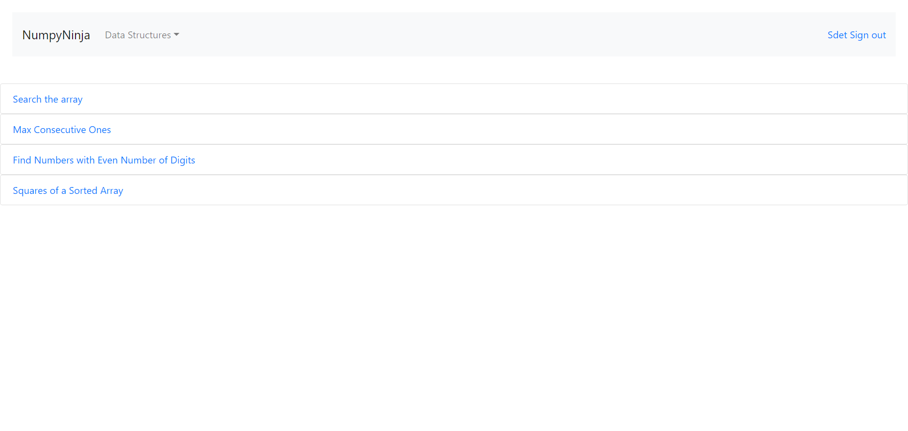
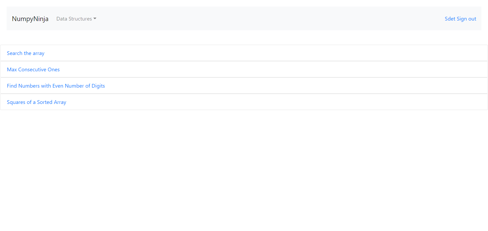

Started
Jul 14, 2023 07:18:38 PM
Ended
Jul 14, 2023 07:59:36 PM
Features Passed
12
Features Failed
8
Features
Scenarios
Steps
Timeline
Tags
| Name | Passed | Failed | Skipped | Others | Passed % |
|---|---|---|---|---|---|
| @logIn | 16 | 0 | 0 | 0 | 100% |
| @pageverification | 2 | 2 | 0 | 0 | 50% |
| @scenario1 | 12 | 0 | 0 | 0 | 100% |
| @StackTest | 13 | 13 | 0 | 0 | 50% |
| @LinkedListPage | 15 | 15 | 0 | 0 | 50% |
| @invalidpythoncode | 5 | 5 | 0 | 0 | 50% |
| @DataStructureTest | 4 | 2 | 0 | 0 | 66.667% |
| @TreeTest | 13 | 13 | 0 | 0 | 50% |
| @Tag | 4 | 2 | 0 | 0 | 66.667% |
| @RegisterPageTest | 26 | 0 | 0 | 0 | 100% |
| @RegisterUrl | 14 | 0 | 0 | 0 | 100% |
| @Login | 2 | 0 | 0 | 0 | 100% |
| @HomePageTest | 44 | 0 | 0 | 0 | 100% |
| @QueuePageTest | 11 | 11 | 0 | 0 | 50% |
| @validpythoncode | 5 | 5 | 0 | 0 | 50% |
| @practice | 3 | 3 | 0 | 0 | 50% |
| @ArrayTest | 45 | 21 | 0 | 0 | 68.182% |
System/Environment
| Name | Value |
|---|---|
| user | suba |
| os | windows |
-
Launch Browser and Test Home Page
7:18:45 PM / 00:00:39:620 Pass
Launch Browser and Test Home Page
07.14.2023 7:18:45 PM 07.14.2023 7:19:25 PM 00:00:39:620 · #test-id=1PassUser is on Home Page and clicks on any dropdown "" without sign in PassUser is on Home Page and clicks on any dropdown "" without sign in Given user is on Home PageWhen The user clicks on data structure dropdown before signinThen The user select any dropdown menu "Arrays"Then The user should get the error message "You are not logged in"PassUser is on Home Page and clicks on any dropdown "" without sign in Given user is on Home PageWhen The user clicks on data structure dropdown before signinThen The user select any dropdown menu "Linked List"Then The user should get the error message "You are not logged in"PassUser is on Home Page and clicks on any dropdown "" without sign in Given user is on Home PageWhen The user clicks on data structure dropdown before signinThen The user select any dropdown menu "Stack"Then The user should get the error message "You are not logged in"PassUser is on Home Page and clicks on any dropdown "" without sign in Given user is on Home PageWhen The user clicks on data structure dropdown before signinThen The user select any dropdown menu "Queue"Then The user should get the error message "You are not logged in"PassUser is on Home Page and clicks on any dropdown "" without sign in Given user is on Home PageWhen The user clicks on data structure dropdown before signinThen The user select any dropdown menu "Tree"Then The user should get the error message "You are not logged in"PassUser is on Home Page and clicks on any dropdown "" without sign in Given user is on Home PageWhen The user clicks on data structure dropdown before signinThen The user select any dropdown menu "Graph"Then The user should get the error message "You are not logged in"PassUser is on Home Page and clicks on any getStarted link "" without sign in PassUser is on Home Page and clicks on any getStarted link "Data Structures-Introduction" without sign inGiven user is on Home PageWhen The user click any of the Get started link before signin "Data Structures-Introduction" in home pageThen The user should get the error message "You are not logged in"PassUser is on Home Page and clicks on any getStarted link "Arrays" without sign inGiven user is on Home PageWhen The user click any of the Get started link before signin "Arrays" in home pageThen The user should get the error message "You are not logged in"PassUser is on Home Page and clicks on any getStarted link "Linked List" without sign inGiven user is on Home PageWhen The user click any of the Get started link before signin "Linked List" in home pageThen The user should get the error message "You are not logged in"PassUser is on Home Page and clicks on any getStarted link "Stack" without sign inGiven user is on Home PageWhen The user click any of the Get started link before signin "Stack" in home pageThen The user should get the error message "You are not logged in"PassUser is on Home Page and clicks on any getStarted link "Queue" without sign inGiven user is on Home PageWhen The user click any of the Get started link before signin "Queue" in home pageThen The user should get the error message "You are not logged in"PassUser is on Home Page and clicks on any getStarted link "Tree" without sign inGiven user is on Home PageWhen The user click any of the Get started link before signin "Tree" in home pageThen The user should get the error message "You are not logged in"PassUser is on Home Page and clicks on any getStarted link "Graph" without sign inGiven user is on Home PageWhen The user click any of the Get started link before signin "Graph" in home pageThen The user should get the error message "You are not logged in"PassUser is on Home page and Clicks on SigninGiven user is on Home PageWhen user clicks on SignIn button he is directed to login pageThen user validates the login pagePassUser is on Home page and Clicks on RegisterGiven user is on Home PageWhen user clicks on Register button he is directed to register pageThen user validates the register pagePassUser is on Home Page and clicks on any getStarted link "" with sign in PassUser is on Home Page and clicks on any getStarted link "Data Structures-Introduction" with sign inGiven user is on Home PageWhen The user click any of the Get started link after signin "Data Structures-Introduction" in home pageThen The user should able to goto its respective pagePassUser is on Home Page and clicks on any getStarted link "Arrays" with sign inGiven user is on Home PageWhen The user click any of the Get started link after signin "Arrays" in home pageThen The user should able to goto its respective pagePassUser is on Home Page and clicks on any getStarted link "Linked List" with sign inGiven user is on Home PageWhen The user click any of the Get started link after signin "Linked List" in home pageThen The user should able to goto its respective pagePassUser is on Home Page and clicks on any getStarted link "Stack" with sign inGiven user is on Home PageWhen The user click any of the Get started link after signin "Stack" in home pageThen The user should able to goto its respective pagePassUser is on Home Page and clicks on any getStarted link "Queue" with sign inGiven user is on Home PageWhen The user click any of the Get started link after signin "Queue" in home pageThen The user should able to goto its respective pagePassUser is on Home Page and clicks on any getStarted link "Tree" with sign inGiven user is on Home PageWhen The user click any of the Get started link after signin "Tree" in home pageThen The user should able to goto its respective pagePassUser is on Home Page and clicks on any getStarted link "Graph" with sign inGiven user is on Home PageWhen The user click any of the Get started link after signin "Graph" in home pageThen The user should able to goto its respective page -
Launch Browser and Test Home Page
7:18:54 PM / 00:00:32:025 Pass
Launch Browser and Test Home Page
07.14.2023 7:18:54 PM 07.14.2023 7:19:26 PM 00:00:32:025 · #test-id=19PassUser is on Home Page and clicks on any dropdown "" without sign in PassUser is on Home Page and clicks on any dropdown "" without sign in Given user is on Home PageWhen The user clicks on data structure dropdown before signinThen The user select any dropdown menu "Arrays"Then The user should get the error message "You are not logged in"PassUser is on Home Page and clicks on any dropdown "" without sign in Given user is on Home PageWhen The user clicks on data structure dropdown before signinThen The user select any dropdown menu "Linked List"Then The user should get the error message "You are not logged in"PassUser is on Home Page and clicks on any dropdown "" without sign in Given user is on Home PageWhen The user clicks on data structure dropdown before signinThen The user select any dropdown menu "Stack"Then The user should get the error message "You are not logged in"PassUser is on Home Page and clicks on any dropdown "" without sign in Given user is on Home PageWhen The user clicks on data structure dropdown before signinThen The user select any dropdown menu "Queue"Then The user should get the error message "You are not logged in"PassUser is on Home Page and clicks on any dropdown "" without sign in Given user is on Home PageWhen The user clicks on data structure dropdown before signinThen The user select any dropdown menu "Tree"Then The user should get the error message "You are not logged in"PassUser is on Home Page and clicks on any dropdown "" without sign in Given user is on Home PageWhen The user clicks on data structure dropdown before signinThen The user select any dropdown menu "Graph"Then The user should get the error message "You are not logged in"PassUser is on Home Page and clicks on any getStarted link "" without sign in PassUser is on Home Page and clicks on any getStarted link "Data Structures-Introduction" without sign inGiven user is on Home PageWhen The user click any of the Get started link before signin "Data Structures-Introduction" in home pageThen The user should get the error message "You are not logged in"PassUser is on Home Page and clicks on any getStarted link "Arrays" without sign inGiven user is on Home PageWhen The user click any of the Get started link before signin "Arrays" in home pageThen The user should get the error message "You are not logged in"PassUser is on Home Page and clicks on any getStarted link "Linked List" without sign inGiven user is on Home PageWhen The user click any of the Get started link before signin "Linked List" in home pageThen The user should get the error message "You are not logged in"PassUser is on Home Page and clicks on any getStarted link "Stack" without sign inGiven user is on Home PageWhen The user click any of the Get started link before signin "Stack" in home pageThen The user should get the error message "You are not logged in"PassUser is on Home Page and clicks on any getStarted link "Queue" without sign inGiven user is on Home PageWhen The user click any of the Get started link before signin "Queue" in home pageThen The user should get the error message "You are not logged in"PassUser is on Home Page and clicks on any getStarted link "Tree" without sign inGiven user is on Home PageWhen The user click any of the Get started link before signin "Tree" in home pageThen The user should get the error message "You are not logged in"PassUser is on Home Page and clicks on any getStarted link "Graph" without sign inGiven user is on Home PageWhen The user click any of the Get started link before signin "Graph" in home pageThen The user should get the error message "You are not logged in"PassUser is on Home page and Clicks on SigninGiven user is on Home PageWhen user clicks on SignIn button he is directed to login pageThen user validates the login pagePassUser is on Home page and Clicks on RegisterGiven user is on Home PageWhen user clicks on Register button he is directed to register pageThen user validates the register pagePassUser is on Home Page and clicks on any getStarted link "" with sign in PassUser is on Home Page and clicks on any getStarted link "Data Structures-Introduction" with sign inGiven user is on Home PageWhen The user click any of the Get started link after signin "Data Structures-Introduction" in home pageThen The user should able to goto its respective pagePassUser is on Home Page and clicks on any getStarted link "Arrays" with sign inGiven user is on Home PageWhen The user click any of the Get started link after signin "Arrays" in home pageThen The user should able to goto its respective pagePassUser is on Home Page and clicks on any getStarted link "Linked List" with sign inGiven user is on Home PageWhen The user click any of the Get started link after signin "Linked List" in home pageThen The user should able to goto its respective pagePassUser is on Home Page and clicks on any getStarted link "Stack" with sign inGiven user is on Home PageWhen The user click any of the Get started link after signin "Stack" in home pageThen The user should able to goto its respective pagePassUser is on Home Page and clicks on any getStarted link "Queue" with sign inGiven user is on Home PageWhen The user click any of the Get started link after signin "Queue" in home pageThen The user should able to goto its respective pagePassUser is on Home Page and clicks on any getStarted link "Tree" with sign inGiven user is on Home PageWhen The user click any of the Get started link after signin "Tree" in home pageThen The user should able to goto its respective pagePassUser is on Home Page and clicks on any getStarted link "Graph" with sign inGiven user is on Home PageWhen The user click any of the Get started link after signin "Graph" in home pageThen The user should able to goto its respective page -
Registration verification and validation
7:19:25 PM / 00:00:34:566 Pass
Registration verification and validation
07.14.2023 7:19:25 PM 07.14.2023 7:20:00 PM 00:00:34:566 · #test-id=226PassTo verify Register Form with Empty fieldsGiven The user opens Register PageWhen User click Register with all empty fieldThen It should display an error "Please fill out this field." below username textboxPassThe user is presented with error message for empty fields below password textboxGiven The user opens Register PageWhen The user clicks Register button after entering username with other fields emptyusername Sdet@1234 Then It should display an error "Please fill out this field." below password textboxPassThe user is presented with error message for empty fields below username textboxGiven The user opens Register PageWhen The user clicks Register button after entering password with other fields emptypassword Sdet1234 Then It should display an error "Please fill out this field." below username textboxPassThe user is presented with error message for empty fields above Password Confirmation textboxGiven The user opens Register PageWhen The user clicks Register button after entering confirmation password with other fields emptyconfirm password Sdet1234 Then It should display an error "Please fill out this field." below Password Confirmation textboxPassTo verify Register Form with username and password onlyGiven The user opens Register PageWhen User enters username and password only and click registerusername password Unumpy Pnumpy Then User verify the message at confirmpassword on Register Page as "Please fill out this field."PassTo verify Register Form with invalid CredentialsPassTo verify Register Form with invalid CredentialsGiven The user opens Register PageWhen user enter invalid "Nu$$@","sdet" and "sdet1"Then User verifies for the mismatch error message "password_mismatch:The two password fields didnt match."PassTo verify Register Form with invalid CredentialsGiven The user opens Register PageWhen user enter invalid "Numpy@sdet","password12" and "password"Then User verifies for the mismatch error message "password_mismatch:The two password fields didnt match."PassTo verify Register Form with invalid CredentialsGiven The user opens Register PageWhen user enter invalid "Numpy@sdet","1010101010" and "1010101010"Then User verifies for the mismatch error message "password_mismatch:The two password fields didnt match."PassTo verify Register Form with invalid CredentialsGiven The user opens Register PageWhen user enter invalid "Numpy@sdet","Numpy@sdet" and "Numpy@sdet"Then User verifies for the mismatch error message "password_mismatch:The two password fields didnt match."PassTo verify Register Form with invalid CredentialsGiven The user opens Register PageWhen user enter invalid "suba","Numpy@sdet" and "Numpy@sdet"Then User verifies for the mismatch error message "password_mismatch:The two password fields didnt match."PassTo verify Register Form with invalid CredentialsGiven The user opens Register PageWhen user enter invalid "Numpy@sdet","asdf" and "asdf"Then User verifies for the mismatch error message "password_mismatch:The two password fields didnt match."PassTo verify Register Form with invalid CredentialsGiven The user opens Register PageWhen user enter invalid "Numpy@sdet","welcome1" and "welcome1"Then User verifies for the mismatch error message "password_mismatch:The two password fields didnt match."Passto register with all the dataPassto register with all the dataGiven The user opens Register PageWhen user enter the sheetname "validcredentials" and row number 0Then User verifies for the successful registration message -
Registration verification and validation
7:19:26 PM / 00:00:33:150 Pass
Registration verification and validation
07.14.2023 7:19:26 PM 07.14.2023 7:20:00 PM 00:00:33:150 · #test-id=245PassTo verify Register Form with Empty fieldsGiven The user opens Register PageWhen User click Register with all empty fieldThen It should display an error "Please fill out this field." below username textboxPassThe user is presented with error message for empty fields below password textboxGiven The user opens Register PageWhen The user clicks Register button after entering username with other fields emptyusername Sdet@1234 Then It should display an error "Please fill out this field." below password textboxPassThe user is presented with error message for empty fields below username textboxGiven The user opens Register PageWhen The user clicks Register button after entering password with other fields emptypassword Sdet1234 Then It should display an error "Please fill out this field." below username textboxPassThe user is presented with error message for empty fields above Password Confirmation textboxGiven The user opens Register PageWhen The user clicks Register button after entering confirmation password with other fields emptyconfirm password Sdet1234 Then It should display an error "Please fill out this field." below Password Confirmation textboxPassTo verify Register Form with username and password onlyGiven The user opens Register PageWhen User enters username and password only and click registerusername password Unumpy Pnumpy Then User verify the message at confirmpassword on Register Page as "Please fill out this field."PassTo verify Register Form with invalid CredentialsPassTo verify Register Form with invalid CredentialsGiven The user opens Register PageWhen user enter invalid "Nu$$@","sdet" and "sdet1"Then User verifies for the mismatch error message "password_mismatch:The two password fields didnt match."PassTo verify Register Form with invalid CredentialsGiven The user opens Register PageWhen user enter invalid "Numpy@sdet","password12" and "password"Then User verifies for the mismatch error message "password_mismatch:The two password fields didnt match."PassTo verify Register Form with invalid CredentialsGiven The user opens Register PageWhen user enter invalid "Numpy@sdet","1010101010" and "1010101010"Then User verifies for the mismatch error message "password_mismatch:The two password fields didnt match."PassTo verify Register Form with invalid CredentialsGiven The user opens Register PageWhen user enter invalid "Numpy@sdet","Numpy@sdet" and "Numpy@sdet"Then User verifies for the mismatch error message "password_mismatch:The two password fields didnt match."PassTo verify Register Form with invalid CredentialsGiven The user opens Register PageWhen user enter invalid "suba","Numpy@sdet" and "Numpy@sdet"Then User verifies for the mismatch error message "password_mismatch:The two password fields didnt match."PassTo verify Register Form with invalid CredentialsGiven The user opens Register PageWhen user enter invalid "Numpy@sdet","asdf" and "asdf"Then User verifies for the mismatch error message "password_mismatch:The two password fields didnt match."PassTo verify Register Form with invalid CredentialsGiven The user opens Register PageWhen user enter invalid "Numpy@sdet","welcome1" and "welcome1"Then User verifies for the mismatch error message "password_mismatch:The two password fields didnt match."Passto register with all the dataPassto register with all the dataGiven The user opens Register PageWhen user enter the sheetname "validcredentials" and row number 0Then User verifies for the successful registration message -
Login Action
7:20:00 PM / 00:00:13:467 Pass
Login Action
07.14.2023 7:20:00 PM 07.14.2023 7:20:13 PM 00:00:13:467 · #test-id=376PassUser is on Home page and Clicks on SigninsGiven user is on Home PageWhen user clicks on SignIn button he is directed to login pageThen user validates the login pagePassTo verify SignIn with Empty fieldsGiven User is on Login pageWhen User clicks on login button with all empty fieldThen User verify the message at username as "Please fill out this field."PassTo verify SignIn with invalid "" and " and gets the result " " PassTo verify SignIn with invalid "abcdefgh" and "zxyu1234 and gets the result "Invalid Username and Password"Given User is on Login pageWhen User enters invalid username as "abcdefgh" and password as "zxyu1234" and gets the result "Invalid Username and Password"And User clicks login buttonThen User verify the message as "Invalid Username and Password"PassTo verify SignIn with invalid "asdfger" and "@@@@ and gets the result "Invalid Username and Password"Given User is on Login pageWhen User enters invalid username as "asdfger" and password as "@@@@" and gets the result "Invalid Username and Password"And User clicks login buttonThen User verify the message as "Invalid Username and Password"PassTo verify SignIn with invalid "ER@$" and "sdkfsk12 and gets the result "Invalid Username and Password"Given User is on Login pageWhen User enters invalid username as "ER@$" and password as "sdkfsk12" and gets the result "Invalid Username and Password"And User clicks login buttonThen User verify the message as "Invalid Username and Password"PassTo verify SignIn with username onlyGiven User is on Login pageWhen User clicks on login button with username as "numpy" onlyThen User verify the message at password as "Please fill out this field."PassTo verify SignIn with password onlyGiven User is on Login pageWhen User clicks on login button with password as "numpy" onlyThen User verify the message at user as "Please fill out this field."PassUser Login with valid "" and " " PassUser Login with valid "sdet" and "sdet1234"Given User is on Login pageWhen User enters valid username "sdet" and password "sdet1234"And User clicks on login buttonThen It should navigate to the home page with a message " You are logged in " -
Login Action
7:20:00 PM / 00:00:14:682 Pass
Login Action
07.14.2023 7:20:00 PM 07.14.2023 7:20:14 PM 00:00:14:682 · #test-id=380PassUser is on Home page and Clicks on SigninsGiven user is on Home PageWhen user clicks on SignIn button he is directed to login pageThen user validates the login pagePassTo verify SignIn with Empty fieldsGiven User is on Login pageWhen User clicks on login button with all empty fieldThen User verify the message at username as "Please fill out this field."PassTo verify SignIn with invalid "" and " and gets the result " " PassTo verify SignIn with invalid "abcdefgh" and "zxyu1234 and gets the result "Invalid Username and Password"Given User is on Login pageWhen User enters invalid username as "abcdefgh" and password as "zxyu1234" and gets the result "Invalid Username and Password"And User clicks login buttonThen User verify the message as "Invalid Username and Password"PassTo verify SignIn with invalid "asdfger" and "@@@@ and gets the result "Invalid Username and Password"Given User is on Login pageWhen User enters invalid username as "asdfger" and password as "@@@@" and gets the result "Invalid Username and Password"And User clicks login buttonThen User verify the message as "Invalid Username and Password"PassTo verify SignIn with invalid "ER@$" and "sdkfsk12 and gets the result "Invalid Username and Password"Given User is on Login pageWhen User enters invalid username as "ER@$" and password as "sdkfsk12" and gets the result "Invalid Username and Password"And User clicks login buttonThen User verify the message as "Invalid Username and Password"PassTo verify SignIn with username onlyGiven User is on Login pageWhen User clicks on login button with username as "numpy" onlyThen User verify the message at password as "Please fill out this field."PassTo verify SignIn with password onlyGiven User is on Login pageWhen User clicks on login button with password as "numpy" onlyThen User verify the message at user as "Please fill out this field."PassUser Login with valid "" and " " PassUser Login with valid "sdet" and "sdet1234"Given User is on Login pageWhen User enters valid username "sdet" and password "sdet1234"And User clicks on login buttonThen It should navigate to the home page with a message " You are logged in " -
Test DataStructure page
7:20:13 PM / 00:00:28:676 Fail
Test DataStructure page
07.14.2023 7:20:13 PM 07.14.2023 7:20:42 PM 00:00:28:676 · #test-id=468PassThe user is able to navigate to all options in datastructure pagePassThe user is able to navigate to all options in datastructure pageGiven The user is on the "DataStructure" ds after logged inWhen The user clicks "Time Complexity" button of Datastructure pageThen The user in "Time Complexity" of Datastructure pageFailThe user is able run code in tryEditorFailThe user is able run code in tryEditorGiven The user is in a "Time Complexity" page having an tryEditor with a Run button to test for DSWhen The user enter valid python DS code in tryEditor from sheet "array" and 0And The user clicks on run button for DSStep skippedThen The user should be presented with Run result for DSStep skippedhooks.Hooks.tearDown(io.cucumber.java.Scenario)_T_h_e_ _u_s_e_r_ _i_s_ _a_b_l_e_ _r_u_n_ _c_o_d_e_ _i_n_ _t_r_y_E_d_i_t_o_r_ FailThe user is able run code in tryEditorFailThe user is able run code in tryEditorGiven The user is in a "Time Complexity" page having an tryEditor with a Run button to test for DSWhen The user enter python DS code with invalid syntax in tryEditor from sheet "array" and 1And The user clicks on run button for DSStep skippedThen The user should be presented with error message for DSStep skippedhooks.Hooks.tearDown(io.cucumber.java.Scenario)_T_h_e_ _u_s_e_r_ _i_s_ _a_b_l_e_ _r_u_n_ _c_o_d_e_ _i_n_ _t_r_y_E_d_i_t_o_r_
FailThe user is able run code in tryEditorFailThe user is able run code in tryEditorGiven The user is in a "Time Complexity" page having an tryEditor with a Run button to test for DSWhen The user enter python DS code with invalid syntax in tryEditor from sheet "array" and 1And The user clicks on run button for DSStep skippedThen The user should be presented with error message for DSStep skippedhooks.Hooks.tearDown(io.cucumber.java.Scenario)_T_h_e_ _u_s_e_r_ _i_s_ _a_b_l_e_ _r_u_n_ _c_o_d_e_ _i_n_ _t_r_y_E_d_i_t_o_r_
-
Test DataStructure page
7:20:14 PM / 00:00:11:209 Pass
Test DataStructure page
07.14.2023 7:20:14 PM 07.14.2023 7:20:26 PM 00:00:11:209 · #test-id=476PassThe user is able to navigate to all options in datastructure pagePassThe user is able to navigate to all options in datastructure pageGiven The user is on the "DataStructure" ds after logged inWhen The user clicks "Time Complexity" button of Datastructure pageThen The user in "Time Complexity" of Datastructure pagePassThe user is able run code in tryEditorPassThe user is able run code in tryEditorGiven The user is in a "Time Complexity" page having an tryEditor with a Run button to test for DSWhen The user enter valid python DS code in tryEditor from sheet "array" and 0And The user clicks on run button for DSThen The user should be presented with Run result for DSPassThe user is able run code in tryEditorPassThe user is able run code in tryEditorGiven The user is in a "Time Complexity" page having an tryEditor with a Run button to test for DSWhen The user enter python DS code with invalid syntax in tryEditor from sheet "array" and 1And The user clicks on run button for DSThen The user should be presented with error message for DS -
Test Array page
7:20:26 PM / 00:02:09:050 Fail
Test Array page
07.14.2023 7:20:26 PM 07.14.2023 7:22:35 PM 00:02:09:050 · #test-id=503PassThe user is able to navigate to all options in array pagePassThe user is able to navigate to all options in array pageGiven The user is on the "Array" after logged inWhen The user clicks "Arrays in Python" buttonThen The user in "Arrays in Python" pagePassThe user is able to navigate to all options in array pageGiven The user is on the "Array" after logged inWhen The user clicks "Arrays Using List" buttonThen The user in "Arrays Using List" pagePassThe user is able to navigate to all options in array pageGiven The user is on the "Array" after logged inWhen The user clicks "Basic Operations in Lists" buttonThen The user in "Basic Operations in Lists" pagePassThe user is able to navigate to all options in array pageGiven The user is on the "Array" after logged inWhen The user clicks "Applications of Array" buttonThen The user in "Applications of Array" pagePassThe user is able to navigate to all options in array pagePassThe user is able to navigate to all options in array pageGiven The user is on the "Array" after logged inWhen The user clicks "Arrays in Python" buttonAnd The user clicks tryEditor with a Run button to test on ArraypageThen The user in "tryEditor" pagePassThe user is able to navigate to all options in array pageGiven The user is on the "Array" after logged inWhen The user clicks "Arrays Using List" buttonAnd The user clicks tryEditor with a Run button to test on ArraypageThen The user in "tryEditor" pagePassThe user is able to navigate to all options in array pageGiven The user is on the "Array" after logged inWhen The user clicks "Basic Operations in Lists" buttonAnd The user clicks tryEditor with a Run button to test on ArraypageThen The user in "tryEditor" pagePassThe user is able to navigate to all options in array pageGiven The user is on the "Array" after logged inWhen The user clicks "Applications of Array" buttonAnd The user clicks tryEditor with a Run button to test on ArraypageThen The user in "tryEditor" pagePassThe user is able run code in tryEditorPassThe user is able run code in tryEditorGiven The user is in a "Arrays in Python" page having an tryEditor with a Run button to testWhen The user enter valid python code in tryEditor from sheet "array" and 0And The user clicks on run buttonThen The user should be presented with Run resultPassThe user is able run code in tryEditorGiven The user is in a "Arrays Using List" page having an tryEditor with a Run button to testWhen The user enter valid python code in tryEditor from sheet "array" and 0And The user clicks on run buttonThen The user should be presented with Run resultPassThe user is able run code in tryEditorGiven The user is in a "Basic Operations in Lists" page having an tryEditor with a Run button to testWhen The user enter valid python code in tryEditor from sheet "array" and 0And The user clicks on run buttonThen The user should be presented with Run resultPassThe user is able run code in tryEditorGiven The user is in a "Applications of Array" page having an tryEditor with a Run button to testWhen The user enter valid python code in tryEditor from sheet "array" and 0And The user clicks on run buttonThen The user should be presented with Run resultFailThe user is able run code in tryEditorPassThe user is able run code in tryEditorGiven The user is in a "Arrays in Python" page having an tryEditor with a Run button to testWhen The user enter python code with invalid syntax in tryEditor from sheet "array" and 1And The user clicks on run buttonThen The user should be presented with error messagePassThe user is able run code in tryEditorGiven The user is in a "Arrays Using List" page having an tryEditor with a Run button to testWhen The user enter python code with invalid syntax in tryEditor from sheet "array" and 1And The user clicks on run buttonThen The user should be presented with error messagePassThe user is able run code in tryEditorGiven The user is in a "Basic Operations in Lists" page having an tryEditor with a Run button to testWhen The user enter python code with invalid syntax in tryEditor from sheet "array" and 1And The user clicks on run buttonThen The user should be presented with error messageFailThe user is able run code in tryEditorGiven The user is in a "Applications of Array" page having an tryEditor with a Run button to testWhen The user enter python code with invalid syntax in tryEditor from sheet "array" and 1And The user clicks on run buttonThen The user should be presented with error messagehooks.Hooks.tearDown(io.cucumber.java.Scenario)_T_h_e_ _u_s_e_r_ _i_s_ _a_b_l_e_ _r_u_n_ _c_o_d_e_ _i_n_ _t_r_y_E_d_i_t_o_r_ PassThe user is able to navigate to Practice pageGiven The user is on the Arrays in Python after logged inWhen The user clicks Practice Questions linkThen The user should be redirected to "practice" pagePassThe user is able to navigate to all practice questionsPassThe user is able to navigate to all practice questionsGiven The user is on the Arrays in Python after logged inWhen The user clicks Practice Questions linkThen The user should be redirected to "practice" pageAnd The user should redirect to "Search the array" practice question pagePassThe user is able to navigate to all practice questionsGiven The user is on the Arrays in Python after logged inWhen The user clicks Practice Questions linkThen The user should be redirected to "practice" pageAnd The user should redirect to "Max Consecutive Ones" practice question pagePassThe user is able to navigate to all practice questionsGiven The user is on the Arrays in Python after logged inWhen The user clicks Practice Questions linkThen The user should be redirected to "practice" pageAnd The user should redirect to "Find Numbers with Even Number of Digits" practice question pagePassThe user is able to navigate to all practice questionsGiven The user is on the Arrays in Python after logged inWhen The user clicks Practice Questions linkThen The user should be redirected to "practice" pageAnd The user should redirect to "Squares of a Sorted Array" practice question pagePassThe user is able to run code in Practice session of Array in pythonPassThe user is able to run code in Practice session of Array in pythonGiven The user is in a "Search the array" practice page having an tryEditor with a Run button to testWhen The user enter valid python code in tryEditor from sheet "array" and 0And The user clicks on run buttonThen The user should be presented with Run resultPassThe user is able to run code in Practice session of Array in pythonGiven The user is in a "Max Consecutive Ones" practice page having an tryEditor with a Run button to testWhen The user enter valid python code in tryEditor from sheet "array" and 0And The user clicks on run buttonThen The user should be presented with Run resultPassThe user is able to run code in Practice session of Array in pythonGiven The user is in a "Find Numbers with Even Number of Digits" practice page having an tryEditor with a Run button to testWhen The user enter valid python code in tryEditor from sheet "array" and 0And The user clicks on run buttonThen The user should be presented with Run resultPassThe user is able to run code in Practice session of Array in pythonGiven The user is in a "Squares of a Sorted Array" practice page having an tryEditor with a Run button to testWhen The user enter valid python code in tryEditor from sheet "array" and 0And The user clicks on run buttonThen The user should be presented with Run resultPassThe user is able to run code in tryEditor for Practice session of Array in pythonPassThe user is able to run code in tryEditor for Practice session of Array in pythonGiven The user is in a "Search the array" practice page having an tryEditor with a Run button to testWhen The user enter valid python code in tryEditor from sheet "array" and 0And The user clicks on run buttonAnd The user clicks on submitThen The user should be presented with Run resultPassThe user is able to run code in tryEditor for Practice session of Array in pythonGiven The user is in a "Max Consecutive Ones" practice page having an tryEditor with a Run button to testWhen The user enter valid python code in tryEditor from sheet "array" and 0And The user clicks on run buttonAnd The user clicks on submitThen The user should be presented with Run resultPassThe user is able to run code in tryEditor for Practice session of Array in pythonGiven The user is in a "Find Numbers with Even Number of Digits" practice page having an tryEditor with a Run button to testWhen The user enter valid python code in tryEditor from sheet "array" and 0And The user clicks on run buttonAnd The user clicks on submitThen The user should be presented with Run resultPassThe user is able to run code in tryEditor for Practice session of Array in pythonGiven The user is in a "Squares of a Sorted Array" practice page having an tryEditor with a Run button to testWhen The user enter valid python code in tryEditor from sheet "array" and 0And The user clicks on run buttonAnd The user clicks on submitThen The user should be presented with Run resultPassThe user is able to run invald code in tryEditor for Practice session of Array in pythonPassThe user is able to run invald code in tryEditor for Practice session of Array in pythonGiven The user is in a "Search the array" practice page having an tryEditor with a Run button to testWhen The user enter python code with invalid syntax in tryEditor from sheet "array" and 1And The user clicks on run buttonThen The user should be presented with error messagePassThe user is able to run invald code in tryEditor for Practice session of Array in pythonGiven The user is in a "Max Consecutive Ones" practice page having an tryEditor with a Run button to testWhen The user enter python code with invalid syntax in tryEditor from sheet "array" and 1And The user clicks on run buttonThen The user should be presented with error messagePassThe user is able to run invald code in tryEditor for Practice session of Array in pythonGiven The user is in a "Find Numbers with Even Number of Digits" practice page having an tryEditor with a Run button to testWhen The user enter python code with invalid syntax in tryEditor from sheet "array" and 1And The user clicks on run buttonThen The user should be presented with error messagePassThe user is able to run invald code in tryEditor for Practice session of Array in pythonGiven The user is in a "Squares of a Sorted Array" practice page having an tryEditor with a Run button to testWhen The user enter python code with invalid syntax in tryEditor from sheet "array" and 1And The user clicks on run buttonThen The user should be presented with error message
PassThe user is able to navigate to Practice pageGiven The user is on the Arrays in Python after logged inWhen The user clicks Practice Questions linkThen The user should be redirected to "practice" pagePassThe user is able to navigate to all practice questionsPassThe user is able to navigate to all practice questionsGiven The user is on the Arrays in Python after logged inWhen The user clicks Practice Questions linkThen The user should be redirected to "practice" pageAnd The user should redirect to "Search the array" practice question pagePassThe user is able to navigate to all practice questionsGiven The user is on the Arrays in Python after logged inWhen The user clicks Practice Questions linkThen The user should be redirected to "practice" pageAnd The user should redirect to "Max Consecutive Ones" practice question pagePassThe user is able to navigate to all practice questionsGiven The user is on the Arrays in Python after logged inWhen The user clicks Practice Questions linkThen The user should be redirected to "practice" pageAnd The user should redirect to "Find Numbers with Even Number of Digits" practice question pagePassThe user is able to navigate to all practice questionsGiven The user is on the Arrays in Python after logged inWhen The user clicks Practice Questions linkThen The user should be redirected to "practice" pageAnd The user should redirect to "Squares of a Sorted Array" practice question pagePassThe user is able to run code in Practice session of Array in pythonPassThe user is able to run code in Practice session of Array in pythonGiven The user is in a "Search the array" practice page having an tryEditor with a Run button to testWhen The user enter valid python code in tryEditor from sheet "array" and 0And The user clicks on run buttonThen The user should be presented with Run resultPassThe user is able to run code in Practice session of Array in pythonGiven The user is in a "Max Consecutive Ones" practice page having an tryEditor with a Run button to testWhen The user enter valid python code in tryEditor from sheet "array" and 0And The user clicks on run buttonThen The user should be presented with Run resultPassThe user is able to run code in Practice session of Array in pythonGiven The user is in a "Find Numbers with Even Number of Digits" practice page having an tryEditor with a Run button to testWhen The user enter valid python code in tryEditor from sheet "array" and 0And The user clicks on run buttonThen The user should be presented with Run resultPassThe user is able to run code in Practice session of Array in pythonGiven The user is in a "Squares of a Sorted Array" practice page having an tryEditor with a Run button to testWhen The user enter valid python code in tryEditor from sheet "array" and 0And The user clicks on run buttonThen The user should be presented with Run resultPassThe user is able to run code in tryEditor for Practice session of Array in pythonPassThe user is able to run code in tryEditor for Practice session of Array in pythonGiven The user is in a "Search the array" practice page having an tryEditor with a Run button to testWhen The user enter valid python code in tryEditor from sheet "array" and 0And The user clicks on run buttonAnd The user clicks on submitThen The user should be presented with Run resultPassThe user is able to run code in tryEditor for Practice session of Array in pythonGiven The user is in a "Max Consecutive Ones" practice page having an tryEditor with a Run button to testWhen The user enter valid python code in tryEditor from sheet "array" and 0And The user clicks on run buttonAnd The user clicks on submitThen The user should be presented with Run resultPassThe user is able to run code in tryEditor for Practice session of Array in pythonGiven The user is in a "Find Numbers with Even Number of Digits" practice page having an tryEditor with a Run button to testWhen The user enter valid python code in tryEditor from sheet "array" and 0And The user clicks on run buttonAnd The user clicks on submitThen The user should be presented with Run resultPassThe user is able to run code in tryEditor for Practice session of Array in pythonGiven The user is in a "Squares of a Sorted Array" practice page having an tryEditor with a Run button to testWhen The user enter valid python code in tryEditor from sheet "array" and 0And The user clicks on run buttonAnd The user clicks on submitThen The user should be presented with Run resultPassThe user is able to run invald code in tryEditor for Practice session of Array in pythonPassThe user is able to run invald code in tryEditor for Practice session of Array in pythonGiven The user is in a "Search the array" practice page having an tryEditor with a Run button to testWhen The user enter python code with invalid syntax in tryEditor from sheet "array" and 1And The user clicks on run buttonThen The user should be presented with error messagePassThe user is able to run invald code in tryEditor for Practice session of Array in pythonGiven The user is in a "Max Consecutive Ones" practice page having an tryEditor with a Run button to testWhen The user enter python code with invalid syntax in tryEditor from sheet "array" and 1And The user clicks on run buttonThen The user should be presented with error messagePassThe user is able to run invald code in tryEditor for Practice session of Array in pythonGiven The user is in a "Find Numbers with Even Number of Digits" practice page having an tryEditor with a Run button to testWhen The user enter python code with invalid syntax in tryEditor from sheet "array" and 1And The user clicks on run buttonThen The user should be presented with error messagePassThe user is able to run invald code in tryEditor for Practice session of Array in pythonGiven The user is in a "Squares of a Sorted Array" practice page having an tryEditor with a Run button to testWhen The user enter python code with invalid syntax in tryEditor from sheet "array" and 1And The user clicks on run buttonThen The user should be presented with error message -
Test Array page
7:20:42 PM / 00:38:45:623 Fail
Test Array page
07.14.2023 7:20:42 PM 07.14.2023 7:59:28 PM 00:38:45:623 · #test-id=569PassThe user is able to navigate to all options in array pagePassThe user is able to navigate to all options in array pageGiven The user is on the "Array" after logged inWhen The user clicks "Arrays in Python" buttonThen The user in "Arrays in Python" pagePassThe user is able to navigate to all options in array pageGiven The user is on the "Array" after logged inWhen The user clicks "Arrays Using List" buttonThen The user in "Arrays Using List" pagePassThe user is able to navigate to all options in array pageGiven The user is on the "Array" after logged inWhen The user clicks "Basic Operations in Lists" buttonThen The user in "Basic Operations in Lists" pagePassThe user is able to navigate to all options in array pageGiven The user is on the "Array" after logged inWhen The user clicks "Applications of Array" buttonThen The user in "Applications of Array" pagePassThe user is able to navigate to all options in array pagePassThe user is able to navigate to all options in array pageGiven The user is on the "Array" after logged inWhen The user clicks "Arrays in Python" buttonAnd The user clicks tryEditor with a Run button to test on ArraypageThen The user in "tryEditor" pagePassThe user is able to navigate to all options in array pageGiven The user is on the "Array" after logged inWhen The user clicks "Arrays Using List" buttonAnd The user clicks tryEditor with a Run button to test on ArraypageThen The user in "tryEditor" pagePassThe user is able to navigate to all options in array pageGiven The user is on the "Array" after logged inWhen The user clicks "Basic Operations in Lists" buttonAnd The user clicks tryEditor with a Run button to test on ArraypageThen The user in "tryEditor" pagePassThe user is able to navigate to all options in array pageGiven The user is on the "Array" after logged inWhen The user clicks "Applications of Array" buttonAnd The user clicks tryEditor with a Run button to test on ArraypageThen The user in "tryEditor" pageFailThe user is able run code in tryEditorFailThe user is able run code in tryEditorGiven The user is in a "Arrays in Python" page having an tryEditor with a Run button to testWhen The user enter valid python code in tryEditor from sheet "array" and 0And The user clicks on run buttonStep skippedThen The user should be presented with Run resultStep skippedhooks.Hooks.tearDown(io.cucumber.java.Scenario)_T_h_e_ _u_s_e_r_ _i_s_ _a_b_l_e_ _r_u_n_ _c_o_d_e_ _i_n_ _t_r_y_E_d_i_t_o_r_ FailThe user is able run code in tryEditorGiven The user is in a "Arrays Using List" page having an tryEditor with a Run button to testWhen The user enter valid python code in tryEditor from sheet "array" and 0And The user clicks on run buttonStep skippedThen The user should be presented with Run resultStep skippedhooks.Hooks.tearDown(io.cucumber.java.Scenario)FailThe user is able run code in tryEditorGiven The user is in a "Basic Operations in Lists" page having an tryEditor with a Run button to testWhen The user enter valid python code in tryEditor from sheet "array" and 0And The user clicks on run buttonStep skippedThen The user should be presented with Run resultStep skippedhooks.Hooks.tearDown(io.cucumber.java.Scenario)_T_h_e_ _u_s_e_r_ _i_s_ _a_b_l_e_ _r_u_n_ _c_o_d_e_ _i_n_ _t_r_y_E_d_i_t_o_r_
FailThe user is able run code in tryEditorGiven The user is in a "Arrays Using List" page having an tryEditor with a Run button to testWhen The user enter valid python code in tryEditor from sheet "array" and 0And The user clicks on run buttonStep skippedThen The user should be presented with Run resultStep skippedhooks.Hooks.tearDown(io.cucumber.java.Scenario)FailThe user is able run code in tryEditorGiven The user is in a "Basic Operations in Lists" page having an tryEditor with a Run button to testWhen The user enter valid python code in tryEditor from sheet "array" and 0And The user clicks on run buttonStep skippedThen The user should be presented with Run resultStep skippedhooks.Hooks.tearDown(io.cucumber.java.Scenario)_T_h_e_ _u_s_e_r_ _i_s_ _a_b_l_e_ _r_u_n_ _c_o_d_e_ _i_n_ _t_r_y_E_d_i_t_o_r_ FailThe user is able run code in tryEditorGiven The user is in a "Applications of Array" page having an tryEditor with a Run button to testWhen The user enter valid python code in tryEditor from sheet "array" and 0And The user clicks on run buttonStep skippedThen The user should be presented with Run resultStep skippedhooks.Hooks.tearDown(io.cucumber.java.Scenario)_T_h_e_ _u_s_e_r_ _i_s_ _a_b_l_e_ _r_u_n_ _c_o_d_e_ _i_n_ _t_r_y_E_d_i_t_o_r_
FailThe user is able run code in tryEditorGiven The user is in a "Applications of Array" page having an tryEditor with a Run button to testWhen The user enter valid python code in tryEditor from sheet "array" and 0And The user clicks on run buttonStep skippedThen The user should be presented with Run resultStep skippedhooks.Hooks.tearDown(io.cucumber.java.Scenario)_T_h_e_ _u_s_e_r_ _i_s_ _a_b_l_e_ _r_u_n_ _c_o_d_e_ _i_n_ _t_r_y_E_d_i_t_o_r_ FailThe user is able run code in tryEditorFailThe user is able run code in tryEditorGiven The user is in a "Arrays in Python" page having an tryEditor with a Run button to testWhen The user enter python code with invalid syntax in tryEditor from sheet "array" and 1And The user clicks on run buttonStep skippedThen The user should be presented with error messageStep skippedhooks.Hooks.tearDown(io.cucumber.java.Scenario)_T_h_e_ _u_s_e_r_ _i_s_ _a_b_l_e_ _r_u_n_ _c_o_d_e_ _i_n_ _t_r_y_E_d_i_t_o_r_
FailThe user is able run code in tryEditorFailThe user is able run code in tryEditorGiven The user is in a "Arrays in Python" page having an tryEditor with a Run button to testWhen The user enter python code with invalid syntax in tryEditor from sheet "array" and 1And The user clicks on run buttonStep skippedThen The user should be presented with error messageStep skippedhooks.Hooks.tearDown(io.cucumber.java.Scenario)_T_h_e_ _u_s_e_r_ _i_s_ _a_b_l_e_ _r_u_n_ _c_o_d_e_ _i_n_ _t_r_y_E_d_i_t_o_r_ FailThe user is able run code in tryEditorGiven The user is in a "Arrays Using List" page having an tryEditor with a Run button to testWhen The user enter python code with invalid syntax in tryEditor from sheet "array" and 1And The user clicks on run buttonStep skippedThen The user should be presented with error messageStep skippedhooks.Hooks.tearDown(io.cucumber.java.Scenario)_T_h_e_ _u_s_e_r_ _i_s_ _a_b_l_e_ _r_u_n_ _c_o_d_e_ _i_n_ _t_r_y_E_d_i_t_o_r_FailThe user is able run code in tryEditorGiven The user is in a "Basic Operations in Lists" page having an tryEditor with a Run button to testWhen The user enter python code with invalid syntax in tryEditor from sheet "array" and 1And The user clicks on run buttonStep skippedThen The user should be presented with error messageStep skippedhooks.Hooks.tearDown(io.cucumber.java.Scenario)_T_h_e_ _u_s_e_r_ _i_s_ _a_b_l_e_ _r_u_n_ _c_o_d_e_ _i_n_ _t_r_y_E_d_i_t_o_r_
FailThe user is able run code in tryEditorGiven The user is in a "Arrays Using List" page having an tryEditor with a Run button to testWhen The user enter python code with invalid syntax in tryEditor from sheet "array" and 1And The user clicks on run buttonStep skippedThen The user should be presented with error messageStep skippedhooks.Hooks.tearDown(io.cucumber.java.Scenario)_T_h_e_ _u_s_e_r_ _i_s_ _a_b_l_e_ _r_u_n_ _c_o_d_e_ _i_n_ _t_r_y_E_d_i_t_o_r_FailThe user is able run code in tryEditorGiven The user is in a "Basic Operations in Lists" page having an tryEditor with a Run button to testWhen The user enter python code with invalid syntax in tryEditor from sheet "array" and 1And The user clicks on run buttonStep skippedThen The user should be presented with error messageStep skippedhooks.Hooks.tearDown(io.cucumber.java.Scenario)_T_h_e_ _u_s_e_r_ _i_s_ _a_b_l_e_ _r_u_n_ _c_o_d_e_ _i_n_ _t_r_y_E_d_i_t_o_r_ FailThe user is able run code in tryEditorGiven The user is in a "Applications of Array" page having an tryEditor with a Run button to testWhen The user enter python code with invalid syntax in tryEditor from sheet "array" and 1And The user clicks on run buttonStep skippedThen The user should be presented with error messageStep skippedhooks.Hooks.tearDown(io.cucumber.java.Scenario)_T_h_e_ _u_s_e_r_ _i_s_ _a_b_l_e_ _r_u_n_ _c_o_d_e_ _i_n_ _t_r_y_E_d_i_t_o_r_
FailThe user is able run code in tryEditorGiven The user is in a "Applications of Array" page having an tryEditor with a Run button to testWhen The user enter python code with invalid syntax in tryEditor from sheet "array" and 1And The user clicks on run buttonStep skippedThen The user should be presented with error messageStep skippedhooks.Hooks.tearDown(io.cucumber.java.Scenario)_T_h_e_ _u_s_e_r_ _i_s_ _a_b_l_e_ _r_u_n_ _c_o_d_e_ _i_n_ _t_r_y_E_d_i_t_o_r_ PassThe user is able to navigate to Practice pageGiven The user is on the Arrays in Python after logged inWhen The user clicks Practice Questions linkThen The user should be redirected to "practice" pagePassThe user is able to navigate to all practice questionsPassThe user is able to navigate to all practice questionsGiven The user is on the Arrays in Python after logged inWhen The user clicks Practice Questions linkThen The user should be redirected to "practice" pageAnd The user should redirect to "Search the array" practice question pagePassThe user is able to navigate to all practice questionsGiven The user is on the Arrays in Python after logged inWhen The user clicks Practice Questions linkThen The user should be redirected to "practice" pageAnd The user should redirect to "Max Consecutive Ones" practice question pagePassThe user is able to navigate to all practice questionsGiven The user is on the Arrays in Python after logged inWhen The user clicks Practice Questions linkThen The user should be redirected to "practice" pageAnd The user should redirect to "Find Numbers with Even Number of Digits" practice question pagePassThe user is able to navigate to all practice questionsGiven The user is on the Arrays in Python after logged inWhen The user clicks Practice Questions linkThen The user should be redirected to "practice" pageAnd The user should redirect to "Squares of a Sorted Array" practice question pageFailThe user is able to run code in Practice session of Array in pythonFailThe user is able to run code in Practice session of Array in pythonGiven The user is in a "Search the array" practice page having an tryEditor with a Run button to testWhen The user enter valid python code in tryEditor from sheet "array" and 0And The user clicks on run buttonStep skippedThen The user should be presented with Run resultStep skippedhooks.Hooks.tearDown(io.cucumber.java.Scenario)_T_h_e_ _u_s_e_r_ _i_s_ _a_b_l_e_ _t_o_ _r_u_n_ _c_o_d_e_ _i_n_ _P_r_a_c_t_i_c_e_ _s_e_s_s_i_o_n_ _o_f_ _A_r_r_a_y_ _i_n_ _p_y_t_h_o_n_FailThe user is able to run code in Practice session of Array in pythonGiven The user is in a "Max Consecutive Ones" practice page having an tryEditor with a Run button to testWhen The user enter valid python code in tryEditor from sheet "array" and 0And The user clicks on run buttonStep skippedThen The user should be presented with Run resultStep skippedhooks.Hooks.tearDown(io.cucumber.java.Scenario)_T_h_e_ _u_s_e_r_ _i_s_ _a_b_l_e_ _t_o_ _r_u_n_ _c_o_d_e_ _i_n_ _P_r_a_c_t_i_c_e_ _s_e_s_s_i_o_n_ _o_f_ _A_r_r_a_y_ _i_n_ _p_y_t_h_o_n_
PassThe user is able to navigate to Practice pageGiven The user is on the Arrays in Python after logged inWhen The user clicks Practice Questions linkThen The user should be redirected to "practice" pagePassThe user is able to navigate to all practice questionsPassThe user is able to navigate to all practice questionsGiven The user is on the Arrays in Python after logged inWhen The user clicks Practice Questions linkThen The user should be redirected to "practice" pageAnd The user should redirect to "Search the array" practice question pagePassThe user is able to navigate to all practice questionsGiven The user is on the Arrays in Python after logged inWhen The user clicks Practice Questions linkThen The user should be redirected to "practice" pageAnd The user should redirect to "Max Consecutive Ones" practice question pagePassThe user is able to navigate to all practice questionsGiven The user is on the Arrays in Python after logged inWhen The user clicks Practice Questions linkThen The user should be redirected to "practice" pageAnd The user should redirect to "Find Numbers with Even Number of Digits" practice question pagePassThe user is able to navigate to all practice questionsGiven The user is on the Arrays in Python after logged inWhen The user clicks Practice Questions linkThen The user should be redirected to "practice" pageAnd The user should redirect to "Squares of a Sorted Array" practice question pageFailThe user is able to run code in Practice session of Array in pythonFailThe user is able to run code in Practice session of Array in pythonGiven The user is in a "Search the array" practice page having an tryEditor with a Run button to testWhen The user enter valid python code in tryEditor from sheet "array" and 0And The user clicks on run buttonStep skippedThen The user should be presented with Run resultStep skippedhooks.Hooks.tearDown(io.cucumber.java.Scenario)_T_h_e_ _u_s_e_r_ _i_s_ _a_b_l_e_ _t_o_ _r_u_n_ _c_o_d_e_ _i_n_ _P_r_a_c_t_i_c_e_ _s_e_s_s_i_o_n_ _o_f_ _A_r_r_a_y_ _i_n_ _p_y_t_h_o_n_FailThe user is able to run code in Practice session of Array in pythonGiven The user is in a "Max Consecutive Ones" practice page having an tryEditor with a Run button to testWhen The user enter valid python code in tryEditor from sheet "array" and 0And The user clicks on run buttonStep skippedThen The user should be presented with Run resultStep skippedhooks.Hooks.tearDown(io.cucumber.java.Scenario)_T_h_e_ _u_s_e_r_ _i_s_ _a_b_l_e_ _t_o_ _r_u_n_ _c_o_d_e_ _i_n_ _P_r_a_c_t_i_c_e_ _s_e_s_s_i_o_n_ _o_f_ _A_r_r_a_y_ _i_n_ _p_y_t_h_o_n_ FailThe user is able to run code in Practice session of Array in pythonGiven The user is in a "Find Numbers with Even Number of Digits" practice page having an tryEditor with a Run button to testWhen The user enter valid python code in tryEditor from sheet "array" and 0And The user clicks on run buttonStep skippedThen The user should be presented with Run resultStep skippedhooks.Hooks.tearDown(io.cucumber.java.Scenario)_T_h_e_ _u_s_e_r_ _i_s_ _a_b_l_e_ _t_o_ _r_u_n_ _c_o_d_e_ _i_n_ _P_r_a_c_t_i_c_e_ _s_e_s_s_i_o_n_ _o_f_ _A_r_r_a_y_ _i_n_ _p_y_t_h_o_n_
FailThe user is able to run code in Practice session of Array in pythonGiven The user is in a "Find Numbers with Even Number of Digits" practice page having an tryEditor with a Run button to testWhen The user enter valid python code in tryEditor from sheet "array" and 0And The user clicks on run buttonStep skippedThen The user should be presented with Run resultStep skippedhooks.Hooks.tearDown(io.cucumber.java.Scenario)_T_h_e_ _u_s_e_r_ _i_s_ _a_b_l_e_ _t_o_ _r_u_n_ _c_o_d_e_ _i_n_ _P_r_a_c_t_i_c_e_ _s_e_s_s_i_o_n_ _o_f_ _A_r_r_a_y_ _i_n_ _p_y_t_h_o_n_ FailThe user is able to run code in Practice session of Array in pythonGiven The user is in a "Squares of a Sorted Array" practice page having an tryEditor with a Run button to testWhen The user enter valid python code in tryEditor from sheet "array" and 0And The user clicks on run buttonStep skippedThen The user should be presented with Run resultStep skippedhooks.Hooks.tearDown(io.cucumber.java.Scenario)_T_h_e_ _u_s_e_r_ _i_s_ _a_b_l_e_ _t_o_ _r_u_n_ _c_o_d_e_ _i_n_ _P_r_a_c_t_i_c_e_ _s_e_s_s_i_o_n_ _o_f_ _A_r_r_a_y_ _i_n_ _p_y_t_h_o_n_
FailThe user is able to run code in Practice session of Array in pythonGiven The user is in a "Squares of a Sorted Array" practice page having an tryEditor with a Run button to testWhen The user enter valid python code in tryEditor from sheet "array" and 0And The user clicks on run buttonStep skippedThen The user should be presented with Run resultStep skippedhooks.Hooks.tearDown(io.cucumber.java.Scenario)_T_h_e_ _u_s_e_r_ _i_s_ _a_b_l_e_ _t_o_ _r_u_n_ _c_o_d_e_ _i_n_ _P_r_a_c_t_i_c_e_ _s_e_s_s_i_o_n_ _o_f_ _A_r_r_a_y_ _i_n_ _p_y_t_h_o_n_ FailThe user is able to run code in tryEditor for Practice session of Array in pythonFailThe user is able to run code in tryEditor for Practice session of Array in pythonGiven The user is in a "Search the array" practice page having an tryEditor with a Run button to testWhen The user enter valid python code in tryEditor from sheet "array" and 0And The user clicks on run buttonStep skippedAnd The user clicks on submitStep skippedThen The user should be presented with Run resultStep skippedhooks.Hooks.tearDown(io.cucumber.java.Scenario)_T_h_e_ _u_s_e_r_ _i_s_ _a_b_l_e_ _t_o_ _r_u_n_ _c_o_d_e_ _i_n_ _t_r_y_E_d_i_t_o_r_ _f_o_r_ _P_r_a_c_t_i_c_e_ _s_e_s_s_i_o_n_ _o_f_ _A_r_r_a_y_ _i_n_ _p_y_t_h_o_n_
FailThe user is able to run code in tryEditor for Practice session of Array in pythonFailThe user is able to run code in tryEditor for Practice session of Array in pythonGiven The user is in a "Search the array" practice page having an tryEditor with a Run button to testWhen The user enter valid python code in tryEditor from sheet "array" and 0And The user clicks on run buttonStep skippedAnd The user clicks on submitStep skippedThen The user should be presented with Run resultStep skippedhooks.Hooks.tearDown(io.cucumber.java.Scenario)_T_h_e_ _u_s_e_r_ _i_s_ _a_b_l_e_ _t_o_ _r_u_n_ _c_o_d_e_ _i_n_ _t_r_y_E_d_i_t_o_r_ _f_o_r_ _P_r_a_c_t_i_c_e_ _s_e_s_s_i_o_n_ _o_f_ _A_r_r_a_y_ _i_n_ _p_y_t_h_o_n_ FailThe user is able to run code in tryEditor for Practice session of Array in pythonGiven The user is in a "Max Consecutive Ones" practice page having an tryEditor with a Run button to testWhen The user enter valid python code in tryEditor from sheet "array" and 0And The user clicks on run buttonStep skippedAnd The user clicks on submitStep skippedThen The user should be presented with Run resultStep skippedhooks.Hooks.tearDown(io.cucumber.java.Scenario)_T_h_e_ _u_s_e_r_ _i_s_ _a_b_l_e_ _t_o_ _r_u_n_ _c_o_d_e_ _i_n_ _t_r_y_E_d_i_t_o_r_ _f_o_r_ _P_r_a_c_t_i_c_e_ _s_e_s_s_i_o_n_ _o_f_ _A_r_r_a_y_ _i_n_ _p_y_t_h_o_n_
FailThe user is able to run code in tryEditor for Practice session of Array in pythonGiven The user is in a "Max Consecutive Ones" practice page having an tryEditor with a Run button to testWhen The user enter valid python code in tryEditor from sheet "array" and 0And The user clicks on run buttonStep skippedAnd The user clicks on submitStep skippedThen The user should be presented with Run resultStep skippedhooks.Hooks.tearDown(io.cucumber.java.Scenario)_T_h_e_ _u_s_e_r_ _i_s_ _a_b_l_e_ _t_o_ _r_u_n_ _c_o_d_e_ _i_n_ _t_r_y_E_d_i_t_o_r_ _f_o_r_ _P_r_a_c_t_i_c_e_ _s_e_s_s_i_o_n_ _o_f_ _A_r_r_a_y_ _i_n_ _p_y_t_h_o_n_ FailThe user is able to run code in tryEditor for Practice session of Array in pythonGiven The user is in a "Find Numbers with Even Number of Digits" practice page having an tryEditor with a Run button to testWhen The user enter valid python code in tryEditor from sheet "array" and 0And The user clicks on run buttonStep skippedAnd The user clicks on submitStep skippedThen The user should be presented with Run resultStep skippedhooks.Hooks.tearDown(io.cucumber.java.Scenario)_T_h_e_ _u_s_e_r_ _i_s_ _a_b_l_e_ _t_o_ _r_u_n_ _c_o_d_e_ _i_n_ _t_r_y_E_d_i_t_o_r_ _f_o_r_ _P_r_a_c_t_i_c_e_ _s_e_s_s_i_o_n_ _o_f_ _A_r_r_a_y_ _i_n_ _p_y_t_h_o_n_
FailThe user is able to run code in tryEditor for Practice session of Array in pythonGiven The user is in a "Find Numbers with Even Number of Digits" practice page having an tryEditor with a Run button to testWhen The user enter valid python code in tryEditor from sheet "array" and 0And The user clicks on run buttonStep skippedAnd The user clicks on submitStep skippedThen The user should be presented with Run resultStep skippedhooks.Hooks.tearDown(io.cucumber.java.Scenario)_T_h_e_ _u_s_e_r_ _i_s_ _a_b_l_e_ _t_o_ _r_u_n_ _c_o_d_e_ _i_n_ _t_r_y_E_d_i_t_o_r_ _f_o_r_ _P_r_a_c_t_i_c_e_ _s_e_s_s_i_o_n_ _o_f_ _A_r_r_a_y_ _i_n_ _p_y_t_h_o_n_ FailThe user is able to run code in tryEditor for Practice session of Array in pythonGiven The user is in a "Squares of a Sorted Array" practice page having an tryEditor with a Run button to testWhen The user enter valid python code in tryEditor from sheet "array" and 0And The user clicks on run buttonStep skippedAnd The user clicks on submitStep skippedThen The user should be presented with Run resultStep skippedhooks.Hooks.tearDown(io.cucumber.java.Scenario)_T_h_e_ _u_s_e_r_ _i_s_ _a_b_l_e_ _t_o_ _r_u_n_ _c_o_d_e_ _i_n_ _t_r_y_E_d_i_t_o_r_ _f_o_r_ _P_r_a_c_t_i_c_e_ _s_e_s_s_i_o_n_ _o_f_ _A_r_r_a_y_ _i_n_ _p_y_t_h_o_n_
FailThe user is able to run code in tryEditor for Practice session of Array in pythonGiven The user is in a "Squares of a Sorted Array" practice page having an tryEditor with a Run button to testWhen The user enter valid python code in tryEditor from sheet "array" and 0And The user clicks on run buttonStep skippedAnd The user clicks on submitStep skippedThen The user should be presented with Run resultStep skippedhooks.Hooks.tearDown(io.cucumber.java.Scenario)_T_h_e_ _u_s_e_r_ _i_s_ _a_b_l_e_ _t_o_ _r_u_n_ _c_o_d_e_ _i_n_ _t_r_y_E_d_i_t_o_r_ _f_o_r_ _P_r_a_c_t_i_c_e_ _s_e_s_s_i_o_n_ _o_f_ _A_r_r_a_y_ _i_n_ _p_y_t_h_o_n_ FailThe user is able to run invald code in tryEditor for Practice session of Array in pythonFailThe user is able to run invald code in tryEditor for Practice session of Array in pythonGiven The user is in a "Search the array" practice page having an tryEditor with a Run button to testWhen The user enter python code with invalid syntax in tryEditor from sheet "array" and 1And The user clicks on run buttonStep skippedThen The user should be presented with error messageStep skippedhooks.Hooks.tearDown(io.cucumber.java.Scenario)FailThe user is able to run invald code in tryEditor for Practice session of Array in pythonGiven The user is in a "Max Consecutive Ones" practice page having an tryEditor with a Run button to testWhen The user enter python code with invalid syntax in tryEditor from sheet "array" and 1Step skippedAnd The user clicks on run buttonStep skippedThen The user should be presented with error messageStep skippedhooks.Hooks.tearDown(io.cucumber.java.Scenario)FailThe user is able to run invald code in tryEditor for Practice session of Array in pythonGiven The user is in a "Find Numbers with Even Number of Digits" practice page having an tryEditor with a Run button to testWhen The user enter python code with invalid syntax in tryEditor from sheet "array" and 1Step skippedAnd The user clicks on run buttonStep skippedThen The user should be presented with error messageStep skippedhooks.Hooks.tearDown(io.cucumber.java.Scenario)FailThe user is able to run invald code in tryEditor for Practice session of Array in pythonGiven The user is in a "Squares of a Sorted Array" practice page having an tryEditor with a Run button to testWhen The user enter python code with invalid syntax in tryEditor from sheet "array" and 1Step skippedAnd The user clicks on run buttonStep skippedThen The user should be presented with error messageStep skippedhooks.Hooks.tearDown(io.cucumber.java.Scenario)
FailThe user is able to run invald code in tryEditor for Practice session of Array in pythonFailThe user is able to run invald code in tryEditor for Practice session of Array in pythonGiven The user is in a "Search the array" practice page having an tryEditor with a Run button to testWhen The user enter python code with invalid syntax in tryEditor from sheet "array" and 1And The user clicks on run buttonStep skippedThen The user should be presented with error messageStep skippedhooks.Hooks.tearDown(io.cucumber.java.Scenario)FailThe user is able to run invald code in tryEditor for Practice session of Array in pythonGiven The user is in a "Max Consecutive Ones" practice page having an tryEditor with a Run button to testWhen The user enter python code with invalid syntax in tryEditor from sheet "array" and 1Step skippedAnd The user clicks on run buttonStep skippedThen The user should be presented with error messageStep skippedhooks.Hooks.tearDown(io.cucumber.java.Scenario)FailThe user is able to run invald code in tryEditor for Practice session of Array in pythonGiven The user is in a "Find Numbers with Even Number of Digits" practice page having an tryEditor with a Run button to testWhen The user enter python code with invalid syntax in tryEditor from sheet "array" and 1Step skippedAnd The user clicks on run buttonStep skippedThen The user should be presented with error messageStep skippedhooks.Hooks.tearDown(io.cucumber.java.Scenario)FailThe user is able to run invald code in tryEditor for Practice session of Array in pythonGiven The user is in a "Squares of a Sorted Array" practice page having an tryEditor with a Run button to testWhen The user enter python code with invalid syntax in tryEditor from sheet "array" and 1Step skippedAnd The user clicks on run buttonStep skippedThen The user should be presented with error messageStep skippedhooks.Hooks.tearDown(io.cucumber.java.Scenario) -
user validates the Linked List Page
7:22:35 PM / 00:00:25:753 Pass
user validates the Linked List Page
07.14.2023 7:22:35 PM 07.14.2023 7:23:01 PM 00:00:25:753 · #test-id=813PassUser selects the Linked List item and verifies the Page TitleGiven user is on Home PageAnd user clicks the Linked List getstart linkThen user is on the Linked List PageAnd user checks for the title "Linked List" in the Linked List pagePassUser checks each of the topics in Linked List with valid python codePassUser checks each of the topics in Linked List with valid python codeGiven user clicks the Linked List getstart linkWhen The user select all option "Introduction" and Verifies the tryeditor Page with the valid python code for each option "LLIntroduction" and 0Then user should be presented with the run resultPassUser checks each of the topics in Linked List with valid python codeGiven user clicks the Linked List getstart linkWhen The user select all option "Creating Linked LIst" and Verifies the tryeditor Page with the valid python code for each option "LLCLinkedList" and 0Then user should be presented with the run resultPassUser checks each of the topics in Linked List with valid python codeGiven user clicks the Linked List getstart linkWhen The user select all option "Types of Linked list" and Verifies the tryeditor Page with the valid python code for each option "LLTyLinkedList" and 0Then user should be presented with the run resultPassUser checks each of the topics in Linked List with invalid python codePassUser checks each of the topics in Linked List with invalid python codeGiven user clicks the Linked List getstart linkWhen The user select all option "Introduction" and Verifies the tryeditor Page with the Invalid python code for each option "LLIntroduction" and 1Then user should get the "SyntaxError: bad input on line"PassUser checks each of the topics in Linked List with invalid python codeGiven user clicks the Linked List getstart linkWhen The user select all option "Creating Linked LIst" and Verifies the tryeditor Page with the Invalid python code for each option "LLCLinkedList" and 1Then user should get the "SyntaxError: bad input on line"PassUser checks each of the topics in Linked List with invalid python codeGiven user clicks the Linked List getstart linkWhen The user select all option "Types of Linked list" and Verifies the tryeditor Page with the Invalid python code for each option "LLTLinkedList" and 1Then user should get the "SyntaxError: bad input on line"PassThe user is able to navigate to Practice pagePassThe user is able to navigate to Practice pageGiven user clicks the Linked List getstart linkThen The user select all option "Introduction"And The User is on the "Introduction" pageWhen The user clicks Practice Questions "Practice Questions" linkThen The user should be redirected to "practice" page and verifies the Url "https://dsportalapp.herokuapp.com/linked-list/practice"PassThe user is able to navigate to Practice pageGiven user clicks the Linked List getstart linkThen The user select all option "Creating Linked LIst"And The User is on the "Creating Linked LIst" pageWhen The user clicks Practice Questions "Practice Questions" linkThen The user should be redirected to "practice" page and verifies the Url "https://dsportalapp.herokuapp.com/linked-list/practice"PassThe user is able to navigate to Practice pageGiven user clicks the Linked List getstart linkThen The user select all option "Types of Linked list"And The User is on the "Types of Linked list" pageWhen The user clicks Practice Questions "Practice Questions" linkThen The user should be redirected to "practice" page and verifies the Url "https://dsportalapp.herokuapp.com/linked-list/practice" -
Test Stack Page
7:23:01 PM / 00:00:31:977 Pass
Test Stack Page
07.14.2023 7:23:01 PM 07.14.2023 7:23:33 PM 00:00:31:977 · #test-id=911PassThe user is able to navigate to all options in stack pagePassThe user is able to navigate to all options in stack pageGiven The user is on the "Stack" page after logged inWhen The user clicks "Operations in Stack" button in stack pageThen The user in "Operations in Stack" pagePassThe user is able to navigate to all options in stack pageGiven The user is on the "Stack" page after logged inWhen The user clicks "Implementation" button in stack pageThen The user in "Implementation" pagePassThe user is able to navigate to all options in stack pageGiven The user is on the "Stack" page after logged inWhen The user clicks "Applications" button in stack pageThen The user in "Applications" pagePassThe user is able to navigate to all options in stack pagePassThe user is able to navigate to all options in stack pageGiven The user is on the "Stack" page after logged inWhen The user clicks "Operations in Stack" button in stack pageAnd The user clicks tryEditor with a Run button to test on stack pageThen The user in "tryEditor" pagePassThe user is able to navigate to all options in stack pageGiven The user is on the "Stack" page after logged inWhen The user clicks "Implementation" button in stack pageAnd The user clicks tryEditor with a Run button to test on stack pageThen The user in "tryEditor" pagePassThe user is able to navigate to all options in stack pageGiven The user is on the "Stack" page after logged inWhen The user clicks "Applications" button in stack pageAnd The user clicks tryEditor with a Run button to test on stack pageThen The user in "tryEditor" pagePassThe user is able stack run code in tryEditorPassThe user is able stack run code in tryEditorGiven The user is in a "Operations in Stack" stack page having an tryEditor with a Run button to testWhen The user enter valid python code in stack tryEditor from sheet "array" and 0And The user clicks on stack run buttonThen The user should be presented with Run result of stackPassThe user is able stack run code in tryEditorGiven The user is in a "Implementation" stack page having an tryEditor with a Run button to testWhen The user enter valid python code in stack tryEditor from sheet "array" and 0And The user clicks on stack run buttonThen The user should be presented with Run result of stackPassThe user is able stack run code in tryEditorGiven The user is in a "Implementation" stack page having an tryEditor with a Run button to testWhen The user enter valid python code in stack tryEditor from sheet "array" and 0And The user clicks on stack run buttonThen The user should be presented with Run result of stackPassThe user is able run code in tryEditorPassThe user is able run code in tryEditorGiven The user is in a "Operations in Stack" stack page having an tryEditor with a Run button to testWhen The user enter python code with invalid syntax in stack tryEditor from sheet "array" and 1And The user clicks on stack run buttonThen The user should be presented with error message in stack pagePassThe user is able run code in tryEditorGiven The user is in a "Implementation" stack page having an tryEditor with a Run button to testWhen The user enter python code with invalid syntax in stack tryEditor from sheet "array" and 1And The user clicks on stack run buttonThen The user should be presented with error message in stack pagePassThe user is able run code in tryEditorGiven The user is in a "Implementation" stack page having an tryEditor with a Run button to testWhen The user enter python code with invalid syntax in stack tryEditor from sheet "array" and 1And The user clicks on stack run buttonThen The user should be presented with error message in stack pagePassThe user is able to navigate to Practice pageGiven The user is on the Operations in Stack after logged inWhen The user clicks stack Practice Questions linkThen The user should be redirected to "practice" page in stack -
Testing queue page
7:23:33 PM / 00:00:23:345 Pass
Testing queue page
07.14.2023 7:23:33 PM 07.14.2023 7:23:56 PM 00:00:23:345 · #test-id=1,002PassUser selects the Graph item and verifies the Page TitleGiven user is on Home PageAnd user clicks the queue getstart linkThen user is on the queue PageThen user checks for the title "Queue" in the queue pagePassUser checks each of the topics in Graph with valid python codePassUser checks each of the topics in Graph with valid python codeGiven user clicks the queue getstart linkWhen The user select all option "Implementation of Queue in Python" from the queue page and Verifies the tryeditor Page with the valid python code for each option "LLIntroduction" and 0Then user should be presented with the run result in the screen "hello world"PassUser checks each of the topics in Graph with valid python codeGiven user clicks the queue getstart linkWhen The user select all option "Implementation using collections.deque" from the queue page and Verifies the tryeditor Page with the valid python code for each option "LLCLinkedList" and 0Then user should be presented with the run result in the screen "hello world"PassUser checks each of the topics in Graph with valid python codeGiven user clicks the queue getstart linkWhen The user select all option "Implementation using collections.deque" from the queue page and Verifies the tryeditor Page with the valid python code for each option "LLCLinkedList" and 0Then user should be presented with the run result in the screen "hello world"PassUser checks each of the topics in Graph with valid python codeGiven user clicks the queue getstart linkWhen The user select all option "Implementation using array" from the queue page and Verifies the tryeditor Page with the valid python code for each option "LLCLinkedList" and 0Then user should be presented with the run result in the screen "hello world"PassUser checks each of the topics in Graph with valid python codeGiven user clicks the queue getstart linkWhen The user select all option "Queue Operations" from the queue page and Verifies the tryeditor Page with the valid python code for each option "LLCLinkedList" and 0Then user should be presented with the run result in the screen "hello world"PassUser checks each of the topics in Graph with invalid python codePassUser checks each of the topics in Graph with invalid python codeGiven user clicks the queue getstart linkWhen The user select all option "Implementation of Queue in Python" and Verifies the tryeditor Page with the Invalid python code for each option "LLIntroduction" and 1 in the queue pageThen user should get the "" on the screen PassUser checks each of the topics in Graph with invalid python codeGiven user clicks the queue getstart linkWhen The user select all option "Implementation using collections.deque" and Verifies the tryeditor Page with the Invalid python code for each option "LLCLinkedList" and 1 in the queue pageThen user should get the "" on the screen PassUser checks each of the topics in Graph with invalid python codeGiven user clicks the queue getstart linkWhen The user select all option "Implementation using collections.deque" and Verifies the tryeditor Page with the Invalid python code for each option "LLCLinkedList" and 1 in the queue pageThen user should get the "" on the screen PassUser checks each of the topics in Graph with invalid python codeGiven user clicks the queue getstart linkWhen The user select all option "Implementation using array" and Verifies the tryeditor Page with the Invalid python code for each option "LLCLinkedList" and 1 in the queue pageThen user should get the "" on the screen PassUser checks each of the topics in Graph with invalid python codeGiven user clicks the queue getstart linkWhen The user select all option "Queue Operations" and Verifies the tryeditor Page with the Invalid python code for each option "LLCLinkedList" and 1 in the queue pageThen user should get the "" on the screen -
Test Tree Page
7:23:56 PM / 00:00:38:167 Pass
Test Tree Page
07.14.2023 7:23:56 PM 07.14.2023 7:24:34 PM 00:00:38:167 · #test-id=1,074PassThe user is able to navigate to all options in tree pagePassThe user is able to navigate to all options in tree pageGiven The user is on the "Tree" tree page after logged inWhen The user clicks "Overview of Trees" button in tree pageThen The user in "Overview of Trees" pagePassThe user is able to navigate to all options in tree pageGiven The user is on the "Tree" tree page after logged inWhen The user clicks "Terminologies" button in tree pageThen The user in "Terminologies" pagePassThe user is able to navigate to all options in tree pageGiven The user is on the "Tree" tree page after logged inWhen The user clicks "Types of Trees" button in tree pageThen The user in "Types of Trees" pagePassThe user is able to navigate to all options in tree pagePassThe user is able to navigate to all options in tree pageGiven The user is on the "Tree" tree page after logged inWhen The user clicks "Overview of Trees" button in tree pageAnd The user clicks tryEditor with a Run button to test on tree pageThen The user in "tryEditor" pagePassThe user is able to navigate to all options in tree pageGiven The user is on the "Tree" tree page after logged inWhen The user clicks "Terminologies" button in tree pageAnd The user clicks tryEditor with a Run button to test on tree pageThen The user in "tryEditor" pagePassThe user is able to navigate to all options in tree pageGiven The user is on the "Tree" tree page after logged inWhen The user clicks "Types of Trees" button in tree pageAnd The user clicks tryEditor with a Run button to test on tree pageThen The user in "tryEditor" pagePassThe user is able tree run code in tryEditorPassThe user is able tree run code in tryEditorGiven The user is in a "Overview of Trees" tree page having an tryEditor with a Run button to testWhen The user enter valid python code in tree tryEditor from sheet "array" and 0And The user clicks on tree run buttonThen The user should be presented with Run result of treePassThe user is able tree run code in tryEditorGiven The user is in a "Terminologies" tree page having an tryEditor with a Run button to testWhen The user enter valid python code in tree tryEditor from sheet "array" and 0And The user clicks on tree run buttonThen The user should be presented with Run result of treePassThe user is able tree run code in tryEditorGiven The user is in a "Types of Trees" tree page having an tryEditor with a Run button to testWhen The user enter valid python code in tree tryEditor from sheet "array" and 0And The user clicks on tree run buttonThen The user should be presented with Run result of treePassThe user is able run code in tryEditorPassThe user is able run code in tryEditorGiven The user is in a "Overview of Trees" tree page having an tryEditor with a Run button to testWhen The user enter python code with invalid syntax in tree tryEditor from sheet "array" and 1And The user clicks on tree run buttonThen The user should be presented with error message in tree pagePassThe user is able run code in tryEditorGiven The user is in a "Terminologies" tree page having an tryEditor with a Run button to testWhen The user enter python code with invalid syntax in tree tryEditor from sheet "array" and 1And The user clicks on tree run buttonThen The user should be presented with error message in tree pagePassThe user is able run code in tryEditorGiven The user is in a "Types of Trees" tree page having an tryEditor with a Run button to testWhen The user enter python code with invalid syntax in tree tryEditor from sheet "array" and 1And The user clicks on tree run buttonThen The user should be presented with error message in tree pagePassThe user is able to navigate to Practice pageGiven The user is on the type of tree after logged inWhen The user clicks tree Practice Questions linkThen The user should be redirected to "practice" page in tree -
user validates the Linked List Page
7:24:34 PM / 00:00:09:850 Pass
user validates the Linked List Page
07.14.2023 7:24:34 PM 07.14.2023 7:24:44 PM 00:00:09:850 · #test-id=1,174PassUser selects the Graph item and verifies the Page TitleGiven user is on Home PageAnd user clicks the Graph getstart linkThen user is on the Graph PageThen user checks for the title "Graph" in the Graph pagePassUser checks each of the topics in Graph with valid python codePassUser checks each of the topics in Graph with valid python codeGiven user clicks the Graph getstart linkWhen The user select all option "Graph" from the graph page and Verifies the tryeditor Page with the valid python code for each option "LLIntroduction" and 0Then user should be presented with the run result in the screen "hello world"PassUser checks each of the topics in Graph with valid python codeGiven user clicks the Graph getstart linkWhen The user select all option "Graph Representations" from the graph page and Verifies the tryeditor Page with the valid python code for each option "LLCLinkedList" and 0Then user should be presented with the run result in the screen "hello world"PassUser checks each of the topics in Graph with invalid python codePassUser checks each of the topics in Graph with invalid python codeGiven user clicks the Graph getstart linkWhen The user select all option "Graph" and Verifies the tryeditor Page with the Invalid python code for each option "LLIntroduction" and 1 in the graph pageThen user should get the "SyntaxError: bad input on line" on the screenPassUser checks each of the topics in Graph with invalid python codeGiven user clicks the Graph getstart linkWhen The user select all option "Graph Representations" and Verifies the tryeditor Page with the Invalid python code for each option "LLCLinkedList" and 1 in the graph pageThen user should get the "SyntaxError: bad input on line" on the screen -
user validates the Linked List Page
7:59:28 PM / 00:00:02:076 Fail
user validates the Linked List Page
07.14.2023 7:59:28 PM 07.14.2023 7:59:30 PM 00:00:02:076 · #test-id=1,232FailUser selects the Linked List item and verifies the Page TitleGiven user is on Home PageAnd user clicks the Linked List getstart linkStep skippedThen user is on the Linked List PageStep skippedAnd user checks for the title "Linked List" in the Linked List pageStep skippedhooks.Hooks.tearDown(io.cucumber.java.Scenario)FailUser checks each of the topics in Linked List with valid python codeFailUser checks each of the topics in Linked List with valid python codeGiven user clicks the Linked List getstart linkWhen The user select all option "Introduction" and Verifies the tryeditor Page with the valid python code for each option "LLIntroduction" and 0Step skippedThen user should be presented with the run resultStep skippedhooks.Hooks.tearDown(io.cucumber.java.Scenario)FailUser checks each of the topics in Linked List with valid python codeGiven user clicks the Linked List getstart linkWhen The user select all option "Creating Linked LIst" and Verifies the tryeditor Page with the valid python code for each option "LLCLinkedList" and 0Step skippedThen user should be presented with the run resultStep skippedhooks.Hooks.tearDown(io.cucumber.java.Scenario)FailUser checks each of the topics in Linked List with valid python codeGiven user clicks the Linked List getstart linkWhen The user select all option "Types of Linked list" and Verifies the tryeditor Page with the valid python code for each option "LLTyLinkedList" and 0Step skippedThen user should be presented with the run resultStep skippedhooks.Hooks.tearDown(io.cucumber.java.Scenario)FailUser checks each of the topics in Linked List with invalid python codeFailUser checks each of the topics in Linked List with invalid python codeGiven user clicks the Linked List getstart linkWhen The user select all option "Introduction" and Verifies the tryeditor Page with the Invalid python code for each option "LLIntroduction" and 1Step skippedThen user should get the "SyntaxError: bad input on line"Step skippedhooks.Hooks.tearDown(io.cucumber.java.Scenario)FailUser checks each of the topics in Linked List with invalid python codeGiven user clicks the Linked List getstart linkWhen The user select all option "Creating Linked LIst" and Verifies the tryeditor Page with the Invalid python code for each option "LLCLinkedList" and 1Step skippedThen user should get the "SyntaxError: bad input on line"Step skippedhooks.Hooks.tearDown(io.cucumber.java.Scenario)FailUser checks each of the topics in Linked List with invalid python codeGiven user clicks the Linked List getstart linkWhen The user select all option "Types of Linked list" and Verifies the tryeditor Page with the Invalid python code for each option "LLTLinkedList" and 1Step skippedThen user should get the "SyntaxError: bad input on line"Step skippedhooks.Hooks.tearDown(io.cucumber.java.Scenario)FailThe user is able to navigate to Practice pageFailThe user is able to navigate to Practice pageGiven user clicks the Linked List getstart linkThen The user select all option "Introduction"Step skippedAnd The User is on the "Introduction" pageStep skippedWhen The user clicks Practice Questions "Practice Questions" linkStep skippedThen The user should be redirected to "practice" page and verifies the Url "https://dsportalapp.herokuapp.com/linked-list/practice"Step skippedhooks.Hooks.tearDown(io.cucumber.java.Scenario)FailThe user is able to navigate to Practice pageGiven user clicks the Linked List getstart linkThen The user select all option "Creating Linked LIst"Step skippedAnd The User is on the "Creating Linked LIst" pageStep skippedWhen The user clicks Practice Questions "Practice Questions" linkStep skippedThen The user should be redirected to "practice" page and verifies the Url "https://dsportalapp.herokuapp.com/linked-list/practice"Step skippedhooks.Hooks.tearDown(io.cucumber.java.Scenario)FailThe user is able to navigate to Practice pageGiven user clicks the Linked List getstart linkThen The user select all option "Types of Linked list"Step skippedAnd The User is on the "Types of Linked list" pageStep skippedWhen The user clicks Practice Questions "Practice Questions" linkStep skippedThen The user should be redirected to "practice" page and verifies the Url "https://dsportalapp.herokuapp.com/linked-list/practice"Step skippedhooks.Hooks.tearDown(io.cucumber.java.Scenario) -
Test Stack Page
7:59:30 PM / 00:00:02:388 Fail
Test Stack Page
07.14.2023 7:59:30 PM 07.14.2023 7:59:32 PM 00:00:02:388 · #test-id=1,293FailThe user is able to navigate to all options in stack pageFailThe user is able to navigate to all options in stack pageGiven The user is on the "Stack" page after logged inWhen The user clicks "Operations in Stack" button in stack pageStep skippedThen The user in "Operations in Stack" pageStep skippedhooks.Hooks.tearDown(io.cucumber.java.Scenario)FailThe user is able to navigate to all options in stack pageGiven The user is on the "Stack" page after logged inWhen The user clicks "Implementation" button in stack pageStep skippedThen The user in "Implementation" pageStep skippedhooks.Hooks.tearDown(io.cucumber.java.Scenario)FailThe user is able to navigate to all options in stack pageGiven The user is on the "Stack" page after logged inWhen The user clicks "Applications" button in stack pageStep skippedThen The user in "Applications" pageStep skippedhooks.Hooks.tearDown(io.cucumber.java.Scenario)FailThe user is able to navigate to all options in stack pageFailThe user is able to navigate to all options in stack pageGiven The user is on the "Stack" page after logged inWhen The user clicks "Operations in Stack" button in stack pageStep skippedAnd The user clicks tryEditor with a Run button to test on stack pageStep skippedThen The user in "tryEditor" pageStep skippedhooks.Hooks.tearDown(io.cucumber.java.Scenario)FailThe user is able to navigate to all options in stack pageGiven The user is on the "Stack" page after logged inWhen The user clicks "Implementation" button in stack pageStep skippedAnd The user clicks tryEditor with a Run button to test on stack pageStep skippedThen The user in "tryEditor" pageStep skippedhooks.Hooks.tearDown(io.cucumber.java.Scenario)FailThe user is able to navigate to all options in stack pageGiven The user is on the "Stack" page after logged inWhen The user clicks "Applications" button in stack pageStep skippedAnd The user clicks tryEditor with a Run button to test on stack pageStep skippedThen The user in "tryEditor" pageStep skippedhooks.Hooks.tearDown(io.cucumber.java.Scenario)FailThe user is able stack run code in tryEditorFailThe user is able stack run code in tryEditorGiven The user is in a "Operations in Stack" stack page having an tryEditor with a Run button to testWhen The user enter valid python code in stack tryEditor from sheet "array" and 0Step skippedAnd The user clicks on stack run buttonStep skippedThen The user should be presented with Run result of stackStep skippedhooks.Hooks.tearDown(io.cucumber.java.Scenario)FailThe user is able stack run code in tryEditorGiven The user is in a "Implementation" stack page having an tryEditor with a Run button to testWhen The user enter valid python code in stack tryEditor from sheet "array" and 0Step skippedAnd The user clicks on stack run buttonStep skippedThen The user should be presented with Run result of stackStep skippedhooks.Hooks.tearDown(io.cucumber.java.Scenario)FailThe user is able stack run code in tryEditorGiven The user is in a "Implementation" stack page having an tryEditor with a Run button to testWhen The user enter valid python code in stack tryEditor from sheet "array" and 0Step skippedAnd The user clicks on stack run buttonStep skippedThen The user should be presented with Run result of stackStep skippedhooks.Hooks.tearDown(io.cucumber.java.Scenario)FailThe user is able run code in tryEditorFailThe user is able run code in tryEditorGiven The user is in a "Operations in Stack" stack page having an tryEditor with a Run button to testWhen The user enter python code with invalid syntax in stack tryEditor from sheet "array" and 1Step skippedAnd The user clicks on stack run buttonStep skippedThen The user should be presented with error message in stack pageStep skippedhooks.Hooks.tearDown(io.cucumber.java.Scenario)FailThe user is able run code in tryEditorGiven The user is in a "Implementation" stack page having an tryEditor with a Run button to testWhen The user enter python code with invalid syntax in stack tryEditor from sheet "array" and 1Step skippedAnd The user clicks on stack run buttonStep skippedThen The user should be presented with error message in stack pageStep skippedhooks.Hooks.tearDown(io.cucumber.java.Scenario)FailThe user is able run code in tryEditorGiven The user is in a "Implementation" stack page having an tryEditor with a Run button to testWhen The user enter python code with invalid syntax in stack tryEditor from sheet "array" and 1Step skippedAnd The user clicks on stack run buttonStep skippedThen The user should be presented with error message in stack pageStep skippedhooks.Hooks.tearDown(io.cucumber.java.Scenario)FailThe user is able to navigate to Practice pageGiven The user is on the Operations in Stack after logged inWhen The user clicks stack Practice Questions linkStep skippedThen The user should be redirected to "practice" page in stackStep skippedhooks.Hooks.tearDown(io.cucumber.java.Scenario) -
Testing queue page
7:59:33 PM / 00:00:01:085 Fail
Testing queue page
07.14.2023 7:59:33 PM 07.14.2023 7:59:34 PM 00:00:01:085 · #test-id=1,372FailUser selects the Graph item and verifies the Page TitleGiven user is on Home PageAnd user clicks the queue getstart linkStep skippedThen user is on the queue PageStep skippedThen user checks for the title "Queue" in the queue pageStep skippedhooks.Hooks.tearDown(io.cucumber.java.Scenario)FailUser checks each of the topics in Graph with valid python codeFailUser checks each of the topics in Graph with valid python codeGiven user clicks the queue getstart linkWhen The user select all option "Implementation of Queue in Python" from the queue page and Verifies the tryeditor Page with the valid python code for each option "LLIntroduction" and 0Step skippedThen user should be presented with the run result in the screen "hello world"Step skippedhooks.Hooks.tearDown(io.cucumber.java.Scenario)FailUser checks each of the topics in Graph with valid python codeGiven user clicks the queue getstart linkWhen The user select all option "Implementation using collections.deque" from the queue page and Verifies the tryeditor Page with the valid python code for each option "LLCLinkedList" and 0Step skippedThen user should be presented with the run result in the screen "hello world"Step skippedhooks.Hooks.tearDown(io.cucumber.java.Scenario)FailUser checks each of the topics in Graph with valid python codeGiven user clicks the queue getstart linkWhen The user select all option "Implementation using collections.deque" from the queue page and Verifies the tryeditor Page with the valid python code for each option "LLCLinkedList" and 0Step skippedThen user should be presented with the run result in the screen "hello world"Step skippedhooks.Hooks.tearDown(io.cucumber.java.Scenario)FailUser checks each of the topics in Graph with valid python codeGiven user clicks the queue getstart linkWhen The user select all option "Implementation using array" from the queue page and Verifies the tryeditor Page with the valid python code for each option "LLCLinkedList" and 0Step skippedThen user should be presented with the run result in the screen "hello world"Step skippedhooks.Hooks.tearDown(io.cucumber.java.Scenario)FailUser checks each of the topics in Graph with valid python codeGiven user clicks the queue getstart linkWhen The user select all option "Queue Operations" from the queue page and Verifies the tryeditor Page with the valid python code for each option "LLCLinkedList" and 0Step skippedThen user should be presented with the run result in the screen "hello world"Step skippedhooks.Hooks.tearDown(io.cucumber.java.Scenario)FailUser checks each of the topics in Graph with invalid python codeFailUser checks each of the topics in Graph with invalid python codeGiven user clicks the queue getstart linkWhen The user select all option "Implementation of Queue in Python" and Verifies the tryeditor Page with the Invalid python code for each option "LLIntroduction" and 1 in the queue pageStep skippedThen user should get the "" on the screen Step skippedhooks.Hooks.tearDown(io.cucumber.java.Scenario)FailUser checks each of the topics in Graph with invalid python codeGiven user clicks the queue getstart linkWhen The user select all option "Implementation using collections.deque" and Verifies the tryeditor Page with the Invalid python code for each option "LLCLinkedList" and 1 in the queue pageStep skippedThen user should get the "" on the screen Step skippedhooks.Hooks.tearDown(io.cucumber.java.Scenario)FailUser checks each of the topics in Graph with invalid python codeGiven user clicks the queue getstart linkWhen The user select all option "Implementation using collections.deque" and Verifies the tryeditor Page with the Invalid python code for each option "LLCLinkedList" and 1 in the queue pageStep skippedThen user should get the "" on the screen Step skippedhooks.Hooks.tearDown(io.cucumber.java.Scenario)FailUser checks each of the topics in Graph with invalid python codeGiven user clicks the queue getstart linkWhen The user select all option "Implementation using array" and Verifies the tryeditor Page with the Invalid python code for each option "LLCLinkedList" and 1 in the queue pageStep skippedThen user should get the "" on the screen Step skippedhooks.Hooks.tearDown(io.cucumber.java.Scenario)FailUser checks each of the topics in Graph with invalid python codeGiven user clicks the queue getstart linkWhen The user select all option "Queue Operations" and Verifies the tryeditor Page with the Invalid python code for each option "LLCLinkedList" and 1 in the queue pageStep skippedThen user should get the "" on the screen Step skippedhooks.Hooks.tearDown(io.cucumber.java.Scenario) -
Test Tree Page
7:59:34 PM / 00:00:01:235 Fail
Test Tree Page
07.14.2023 7:59:34 PM 07.14.2023 7:59:35 PM 00:00:01:235 · #test-id=1,431FailThe user is able to navigate to all options in tree pageFailThe user is able to navigate to all options in tree pageGiven The user is on the "Tree" tree page after logged inWhen The user clicks "Overview of Trees" button in tree pageStep skippedThen The user in "Overview of Trees" pageStep skippedhooks.Hooks.tearDown(io.cucumber.java.Scenario)FailThe user is able to navigate to all options in tree pageGiven The user is on the "Tree" tree page after logged inWhen The user clicks "Terminologies" button in tree pageStep skippedThen The user in "Terminologies" pageStep skippedhooks.Hooks.tearDown(io.cucumber.java.Scenario)FailThe user is able to navigate to all options in tree pageGiven The user is on the "Tree" tree page after logged inWhen The user clicks "Types of Trees" button in tree pageStep skippedThen The user in "Types of Trees" pageStep skippedhooks.Hooks.tearDown(io.cucumber.java.Scenario)FailThe user is able to navigate to all options in tree pageFailThe user is able to navigate to all options in tree pageGiven The user is on the "Tree" tree page after logged inWhen The user clicks "Overview of Trees" button in tree pageStep skippedAnd The user clicks tryEditor with a Run button to test on tree pageStep skippedThen The user in "tryEditor" pageStep skippedhooks.Hooks.tearDown(io.cucumber.java.Scenario)FailThe user is able to navigate to all options in tree pageGiven The user is on the "Tree" tree page after logged inWhen The user clicks "Terminologies" button in tree pageStep skippedAnd The user clicks tryEditor with a Run button to test on tree pageStep skippedThen The user in "tryEditor" pageStep skippedhooks.Hooks.tearDown(io.cucumber.java.Scenario)FailThe user is able to navigate to all options in tree pageGiven The user is on the "Tree" tree page after logged inWhen The user clicks "Types of Trees" button in tree pageStep skippedAnd The user clicks tryEditor with a Run button to test on tree pageStep skippedThen The user in "tryEditor" pageStep skippedhooks.Hooks.tearDown(io.cucumber.java.Scenario)FailThe user is able tree run code in tryEditorFailThe user is able tree run code in tryEditorGiven The user is in a "Overview of Trees" tree page having an tryEditor with a Run button to testWhen The user enter valid python code in tree tryEditor from sheet "array" and 0Step skippedAnd The user clicks on tree run buttonStep skippedThen The user should be presented with Run result of treeStep skippedhooks.Hooks.tearDown(io.cucumber.java.Scenario)FailThe user is able tree run code in tryEditorGiven The user is in a "Terminologies" tree page having an tryEditor with a Run button to testWhen The user enter valid python code in tree tryEditor from sheet "array" and 0Step skippedAnd The user clicks on tree run buttonStep skippedThen The user should be presented with Run result of treeStep skippedhooks.Hooks.tearDown(io.cucumber.java.Scenario)FailThe user is able tree run code in tryEditorGiven The user is in a "Types of Trees" tree page having an tryEditor with a Run button to testWhen The user enter valid python code in tree tryEditor from sheet "array" and 0Step skippedAnd The user clicks on tree run buttonStep skippedThen The user should be presented with Run result of treeStep skippedhooks.Hooks.tearDown(io.cucumber.java.Scenario)FailThe user is able run code in tryEditorFailThe user is able run code in tryEditorGiven The user is in a "Overview of Trees" tree page having an tryEditor with a Run button to testWhen The user enter python code with invalid syntax in tree tryEditor from sheet "array" and 1Step skippedAnd The user clicks on tree run buttonStep skippedThen The user should be presented with error message in tree pageStep skippedhooks.Hooks.tearDown(io.cucumber.java.Scenario)FailThe user is able run code in tryEditorGiven The user is in a "Terminologies" tree page having an tryEditor with a Run button to testWhen The user enter python code with invalid syntax in tree tryEditor from sheet "array" and 1Step skippedAnd The user clicks on tree run buttonStep skippedThen The user should be presented with error message in tree pageStep skippedhooks.Hooks.tearDown(io.cucumber.java.Scenario)FailThe user is able run code in tryEditorGiven The user is in a "Types of Trees" tree page having an tryEditor with a Run button to testWhen The user enter python code with invalid syntax in tree tryEditor from sheet "array" and 1Step skippedAnd The user clicks on tree run buttonStep skippedThen The user should be presented with error message in tree pageStep skippedhooks.Hooks.tearDown(io.cucumber.java.Scenario)FailThe user is able to navigate to Practice pageGiven The user is on the type of tree after logged inWhen The user clicks tree Practice Questions linkStep skippedThen The user should be redirected to "practice" page in treeStep skippedhooks.Hooks.tearDown(io.cucumber.java.Scenario) -
user validates the Linked List Page
7:59:35 PM / 00:00:00:519 Fail
user validates the Linked List Page
07.14.2023 7:59:35 PM 07.14.2023 7:59:36 PM 00:00:00:519 · #test-id=1,510FailUser selects the Graph item and verifies the Page TitleGiven user is on Home PageAnd user clicks the Graph getstart linkStep skippedThen user is on the Graph PageStep skippedThen user checks for the title "Graph" in the Graph pageStep skippedhooks.Hooks.tearDown(io.cucumber.java.Scenario)FailUser checks each of the topics in Graph with valid python codeFailUser checks each of the topics in Graph with valid python codeGiven user clicks the Graph getstart linkWhen The user select all option "Graph" from the graph page and Verifies the tryeditor Page with the valid python code for each option "LLIntroduction" and 0Step skippedThen user should be presented with the run result in the screen "hello world"Step skippedhooks.Hooks.tearDown(io.cucumber.java.Scenario)FailUser checks each of the topics in Graph with valid python codeGiven user clicks the Graph getstart linkWhen The user select all option "Graph Representations" from the graph page and Verifies the tryeditor Page with the valid python code for each option "LLCLinkedList" and 0Step skippedThen user should be presented with the run result in the screen "hello world"Step skippedhooks.Hooks.tearDown(io.cucumber.java.Scenario)FailUser checks each of the topics in Graph with invalid python codeFailUser checks each of the topics in Graph with invalid python codeGiven user clicks the Graph getstart linkWhen The user select all option "Graph" and Verifies the tryeditor Page with the Invalid python code for each option "LLIntroduction" and 1 in the graph pageStep skippedThen user should get the "SyntaxError: bad input on line" on the screenStep skippedhooks.Hooks.tearDown(io.cucumber.java.Scenario)FailUser checks each of the topics in Graph with invalid python codeGiven user clicks the Graph getstart linkWhen The user select all option "Graph Representations" and Verifies the tryeditor Page with the Invalid python code for each option "LLCLinkedList" and 1 in the graph pageStep skippedThen user should get the "SyntaxError: bad input on line" on the screenStep skippedhooks.Hooks.tearDown(io.cucumber.java.Scenario)
-
@logIn
16 tests
@logIn
16 passedStatus Timestamp TestName Pass 19:20:00 PM User is on Home page and Clicks on Signins Login Action.User is on Home page and Clicks on SigninsPass 19:20:00 PM User is on Home page and Clicks on Signins Login Action.User is on Home page and Clicks on SigninsPass 19:20:00 PM To verify SignIn with Empty fields Login Action.To verify SignIn with Empty fieldsPass 19:20:00 PM To verify SignIn with Empty fields Login Action.To verify SignIn with Empty fieldsPass 19:20:01 PM To verify SignIn with invalid "abcdefgh" and "zxyu1234 and gets the result "Invalid Username and Password" Login Action.To verify SignIn with invalid "abcdefgh" and "zxyu1234 and gets the result "Invalid Username and Password"Pass 19:20:01 PM To verify SignIn with invalid "abcdefgh" and "zxyu1234 and gets the result "Invalid Username and Password" Login Action.To verify SignIn with invalid "abcdefgh" and "zxyu1234 and gets the result "Invalid Username and Password"Pass 19:20:02 PM To verify SignIn with invalid "asdfger" and "@@@@ and gets the result "Invalid Username and Password" Login Action.To verify SignIn with invalid "asdfger" and "@@@@ and gets the result "Invalid Username and Password"Pass 19:20:03 PM To verify SignIn with invalid "asdfger" and "@@@@ and gets the result "Invalid Username and Password" Login Action.To verify SignIn with invalid "asdfger" and "@@@@ and gets the result "Invalid Username and Password"Pass 19:20:04 PM To verify SignIn with invalid "ER@$" and "sdkfsk12 and gets the result "Invalid Username and Password" Login Action.To verify SignIn with invalid "ER@$" and "sdkfsk12 and gets the result "Invalid Username and Password"Pass 19:20:05 PM To verify SignIn with invalid "ER@$" and "sdkfsk12 and gets the result "Invalid Username and Password" Login Action.To verify SignIn with invalid "ER@$" and "sdkfsk12 and gets the result "Invalid Username and Password"Pass 19:20:07 PM To verify SignIn with username only Login Action.To verify SignIn with username onlyPass 19:20:07 PM To verify SignIn with username only Login Action.To verify SignIn with username onlyPass 19:20:09 PM To verify SignIn with password only Login Action.To verify SignIn with password onlyPass 19:20:10 PM To verify SignIn with password only Login Action.To verify SignIn with password onlyPass 19:20:11 PM User Login with valid "sdet" and "sdet1234" Login Action.User Login with valid "sdet" and "sdet1234"Pass 19:20:12 PM User Login with valid "sdet" and "sdet1234" Login Action.User Login with valid "sdet" and "sdet1234" -
@pageverification
4 tests
@pageverification
2 passed 2 failedStatus Timestamp TestName Pass 19:22:35 PM User selects the Linked List item and verifies the Page Title user validates the Linked List Page.User selects the Linked List item and verifies the Page TitlePass 19:24:34 PM User selects the Graph item and verifies the Page Title user validates the Linked List Page.User selects the Graph item and verifies the Page TitleFail 19:59:28 PM User selects the Linked List item and verifies the Page Title user validates the Linked List Page.User selects the Linked List item and verifies the Page TitleFail 19:59:35 PM User selects the Graph item and verifies the Page Title user validates the Linked List Page.User selects the Graph item and verifies the Page Title -
@scenario1
12 tests
@scenario1
12 passedStatus Timestamp TestName Pass 19:18:45 PM User is on Home Page and clicks on any dropdown " " without sign in Launch Browser and Test Home Page.User is on Home Page and clicks on any dropdown "" without sign in Pass 19:18:46 PM User is on Home Page and clicks on any dropdown " " without sign in Launch Browser and Test Home Page.User is on Home Page and clicks on any dropdown "" without sign in Pass 19:18:52 PM User is on Home Page and clicks on any dropdown " " without sign in Launch Browser and Test Home Page.User is on Home Page and clicks on any dropdown "" without sign in Pass 19:18:54 PM User is on Home Page and clicks on any dropdown " " without sign in Launch Browser and Test Home Page.User is on Home Page and clicks on any dropdown "" without sign in Pass 19:18:56 PM User is on Home Page and clicks on any dropdown " " without sign in Launch Browser and Test Home Page.User is on Home Page and clicks on any dropdown "" without sign in Pass 19:18:57 PM User is on Home Page and clicks on any dropdown " " without sign in Launch Browser and Test Home Page.User is on Home Page and clicks on any dropdown "" without sign in Pass 19:18:59 PM User is on Home Page and clicks on any dropdown " " without sign in Launch Browser and Test Home Page.User is on Home Page and clicks on any dropdown "" without sign in Pass 19:18:59 PM User is on Home Page and clicks on any dropdown " " without sign in Launch Browser and Test Home Page.User is on Home Page and clicks on any dropdown "" without sign in Pass 19:19:00 PM User is on Home Page and clicks on any dropdown " " without sign in Launch Browser and Test Home Page.User is on Home Page and clicks on any dropdown "" without sign in Pass 19:19:01 PM User is on Home Page and clicks on any dropdown " " without sign in Launch Browser and Test Home Page.User is on Home Page and clicks on any dropdown "" without sign in Pass 19:19:02 PM User is on Home Page and clicks on any dropdown " " without sign in Launch Browser and Test Home Page.User is on Home Page and clicks on any dropdown "" without sign in Pass 19:19:04 PM User is on Home Page and clicks on any dropdown " " without sign in Launch Browser and Test Home Page.User is on Home Page and clicks on any dropdown "" without sign in -
@StackTest
26 tests
@StackTest
13 passed 13 failedStatus Timestamp TestName Pass 19:23:01 PM The user is able to navigate to all options in stack page Test Stack Page.The user is able to navigate to all options in stack pagePass 19:23:02 PM The user is able to navigate to all options in stack page Test Stack Page.The user is able to navigate to all options in stack pagePass 19:23:03 PM The user is able to navigate to all options in stack page Test Stack Page.The user is able to navigate to all options in stack pagePass 19:23:03 PM The user is able to navigate to all options in stack page Test Stack Page.The user is able to navigate to all options in stack pagePass 19:23:05 PM The user is able to navigate to all options in stack page Test Stack Page.The user is able to navigate to all options in stack pagePass 19:23:06 PM The user is able to navigate to all options in stack page Test Stack Page.The user is able to navigate to all options in stack pagePass 19:23:08 PM The user is able stack run code in tryEditor Test Stack Page.The user is able stack run code in tryEditorPass 19:23:13 PM The user is able stack run code in tryEditor Test Stack Page.The user is able stack run code in tryEditorPass 19:23:17 PM The user is able stack run code in tryEditor Test Stack Page.The user is able stack run code in tryEditorPass 19:23:20 PM The user is able run code in tryEditor Test Stack Page.The user is able run code in tryEditorPass 19:23:25 PM The user is able run code in tryEditor Test Stack Page.The user is able run code in tryEditorPass 19:23:28 PM The user is able run code in tryEditor Test Stack Page.The user is able run code in tryEditorPass 19:23:32 PM The user is able to navigate to Practice page Test Stack Page.The user is able to navigate to Practice pageFail 19:59:30 PM The user is able to navigate to all options in stack page Test Stack Page.The user is able to navigate to all options in stack pageFail 19:59:30 PM The user is able to navigate to all options in stack page Test Stack Page.The user is able to navigate to all options in stack pageFail 19:59:30 PM The user is able to navigate to all options in stack page Test Stack Page.The user is able to navigate to all options in stack pageFail 19:59:31 PM The user is able to navigate to all options in stack page Test Stack Page.The user is able to navigate to all options in stack pageFail 19:59:31 PM The user is able to navigate to all options in stack page Test Stack Page.The user is able to navigate to all options in stack pageFail 19:59:31 PM The user is able to navigate to all options in stack page Test Stack Page.The user is able to navigate to all options in stack pageFail 19:59:31 PM The user is able stack run code in tryEditor Test Stack Page.The user is able stack run code in tryEditorFail 19:59:31 PM The user is able stack run code in tryEditor Test Stack Page.The user is able stack run code in tryEditorFail 19:59:32 PM The user is able stack run code in tryEditor Test Stack Page.The user is able stack run code in tryEditorFail 19:59:32 PM The user is able run code in tryEditor Test Stack Page.The user is able run code in tryEditorFail 19:59:32 PM The user is able run code in tryEditor Test Stack Page.The user is able run code in tryEditorFail 19:59:32 PM The user is able run code in tryEditor Test Stack Page.The user is able run code in tryEditorFail 19:59:32 PM The user is able to navigate to Practice page Test Stack Page.The user is able to navigate to Practice page -
@LinkedListPage
30 tests
@LinkedListPage
15 passed 15 failedStatus Timestamp TestName Pass 19:22:35 PM User selects the Linked List item and verifies the Page Title user validates the Linked List Page.User selects the Linked List item and verifies the Page TitlePass 19:22:36 PM User checks each of the topics in Linked List with valid python code user validates the Linked List Page.User checks each of the topics in Linked List with valid python codePass 19:22:38 PM User checks each of the topics in Linked List with valid python code user validates the Linked List Page.User checks each of the topics in Linked List with valid python codePass 19:22:40 PM User checks each of the topics in Linked List with valid python code user validates the Linked List Page.User checks each of the topics in Linked List with valid python codePass 19:22:43 PM User checks each of the topics in Linked List with invalid python code user validates the Linked List Page.User checks each of the topics in Linked List with invalid python codePass 19:22:47 PM User checks each of the topics in Linked List with invalid python code user validates the Linked List Page.User checks each of the topics in Linked List with invalid python codePass 19:22:51 PM User checks each of the topics in Linked List with invalid python code user validates the Linked List Page.User checks each of the topics in Linked List with invalid python codePass 19:22:53 PM The user is able to navigate to Practice page user validates the Linked List Page.The user is able to navigate to Practice pagePass 19:22:56 PM The user is able to navigate to Practice page user validates the Linked List Page.The user is able to navigate to Practice pagePass 19:22:59 PM The user is able to navigate to Practice page user validates the Linked List Page.The user is able to navigate to Practice pagePass 19:24:34 PM User selects the Graph item and verifies the Page Title user validates the Linked List Page.User selects the Graph item and verifies the Page TitlePass 19:24:35 PM User checks each of the topics in Graph with valid python code user validates the Linked List Page.User checks each of the topics in Graph with valid python codePass 19:24:37 PM User checks each of the topics in Graph with valid python code user validates the Linked List Page.User checks each of the topics in Graph with valid python codePass 19:24:39 PM User checks each of the topics in Graph with invalid python code user validates the Linked List Page.User checks each of the topics in Graph with invalid python codePass 19:24:41 PM User checks each of the topics in Graph with invalid python code user validates the Linked List Page.User checks each of the topics in Graph with invalid python codeFail 19:59:28 PM User selects the Linked List item and verifies the Page Title user validates the Linked List Page.User selects the Linked List item and verifies the Page TitleFail 19:59:28 PM User checks each of the topics in Linked List with valid python code user validates the Linked List Page.User checks each of the topics in Linked List with valid python codeFail 19:59:28 PM User checks each of the topics in Linked List with valid python code user validates the Linked List Page.User checks each of the topics in Linked List with valid python codeFail 19:59:28 PM User checks each of the topics in Linked List with valid python code user validates the Linked List Page.User checks each of the topics in Linked List with valid python codeFail 19:59:29 PM User checks each of the topics in Linked List with invalid python code user validates the Linked List Page.User checks each of the topics in Linked List with invalid python codeFail 19:59:29 PM User checks each of the topics in Linked List with invalid python code user validates the Linked List Page.User checks each of the topics in Linked List with invalid python codeFail 19:59:29 PM User checks each of the topics in Linked List with invalid python code user validates the Linked List Page.User checks each of the topics in Linked List with invalid python codeFail 19:59:30 PM The user is able to navigate to Practice page user validates the Linked List Page.The user is able to navigate to Practice pageFail 19:59:30 PM The user is able to navigate to Practice page user validates the Linked List Page.The user is able to navigate to Practice pageFail 19:59:30 PM The user is able to navigate to Practice page user validates the Linked List Page.The user is able to navigate to Practice pageFail 19:59:35 PM User selects the Graph item and verifies the Page Title user validates the Linked List Page.User selects the Graph item and verifies the Page TitleFail 19:59:35 PM User checks each of the topics in Graph with valid python code user validates the Linked List Page.User checks each of the topics in Graph with valid python codeFail 19:59:35 PM User checks each of the topics in Graph with valid python code user validates the Linked List Page.User checks each of the topics in Graph with valid python codeFail 19:59:35 PM User checks each of the topics in Graph with invalid python code user validates the Linked List Page.User checks each of the topics in Graph with invalid python codeFail 19:59:36 PM User checks each of the topics in Graph with invalid python code user validates the Linked List Page.User checks each of the topics in Graph with invalid python code -
@invalidpythoncode
10 tests
@invalidpythoncode
5 passed 5 failedStatus Timestamp TestName Pass 19:22:43 PM User checks each of the topics in Linked List with invalid python code user validates the Linked List Page.User checks each of the topics in Linked List with invalid python codePass 19:22:47 PM User checks each of the topics in Linked List with invalid python code user validates the Linked List Page.User checks each of the topics in Linked List with invalid python codePass 19:22:51 PM User checks each of the topics in Linked List with invalid python code user validates the Linked List Page.User checks each of the topics in Linked List with invalid python codePass 19:24:39 PM User checks each of the topics in Graph with invalid python code user validates the Linked List Page.User checks each of the topics in Graph with invalid python codePass 19:24:41 PM User checks each of the topics in Graph with invalid python code user validates the Linked List Page.User checks each of the topics in Graph with invalid python codeFail 19:59:29 PM User checks each of the topics in Linked List with invalid python code user validates the Linked List Page.User checks each of the topics in Linked List with invalid python codeFail 19:59:29 PM User checks each of the topics in Linked List with invalid python code user validates the Linked List Page.User checks each of the topics in Linked List with invalid python codeFail 19:59:29 PM User checks each of the topics in Linked List with invalid python code user validates the Linked List Page.User checks each of the topics in Linked List with invalid python codeFail 19:59:35 PM User checks each of the topics in Graph with invalid python code user validates the Linked List Page.User checks each of the topics in Graph with invalid python codeFail 19:59:36 PM User checks each of the topics in Graph with invalid python code user validates the Linked List Page.User checks each of the topics in Graph with invalid python code -
@DataStructureTest
6 tests
@DataStructureTest
4 passed 2 failedStatus Timestamp TestName Pass 19:20:13 PM The user is able to navigate to all options in datastructure page Test DataStructure page.The user is able to navigate to all options in datastructure pagePass 19:20:14 PM The user is able to navigate to all options in datastructure page Test DataStructure page.The user is able to navigate to all options in datastructure pageFail 19:20:15 PM The user is able run code in tryEditor Test DataStructure page.The user is able run code in tryEditorPass 19:20:17 PM The user is able run code in tryEditor Test DataStructure page.The user is able run code in tryEditorPass 19:20:22 PM The user is able run code in tryEditor Test DataStructure page.The user is able run code in tryEditorFail 19:20:29 PM The user is able run code in tryEditor Test DataStructure page.The user is able run code in tryEditor -
@TreeTest
26 tests
@TreeTest
13 passed 13 failedStatus Timestamp TestName Pass 19:23:56 PM The user is able to navigate to all options in tree page Test Tree Page.The user is able to navigate to all options in tree pagePass 19:23:58 PM The user is able to navigate to all options in tree page Test Tree Page.The user is able to navigate to all options in tree pagePass 19:24:00 PM The user is able to navigate to all options in tree page Test Tree Page.The user is able to navigate to all options in tree pagePass 19:24:01 PM The user is able to navigate to all options in tree page Test Tree Page.The user is able to navigate to all options in tree pagePass 19:24:02 PM The user is able to navigate to all options in tree page Test Tree Page.The user is able to navigate to all options in tree pagePass 19:24:04 PM The user is able to navigate to all options in tree page Test Tree Page.The user is able to navigate to all options in tree pagePass 19:24:06 PM The user is able tree run code in tryEditor Test Tree Page.The user is able tree run code in tryEditorPass 19:24:10 PM The user is able tree run code in tryEditor Test Tree Page.The user is able tree run code in tryEditorPass 19:24:14 PM The user is able tree run code in tryEditor Test Tree Page.The user is able tree run code in tryEditorPass 19:24:20 PM The user is able run code in tryEditor Test Tree Page.The user is able run code in tryEditorPass 19:24:24 PM The user is able run code in tryEditor Test Tree Page.The user is able run code in tryEditorPass 19:24:28 PM The user is able run code in tryEditor Test Tree Page.The user is able run code in tryEditorPass 19:24:33 PM The user is able to navigate to Practice page Test Tree Page.The user is able to navigate to Practice pageFail 19:59:34 PM The user is able to navigate to all options in tree page Test Tree Page.The user is able to navigate to all options in tree pageFail 19:59:34 PM The user is able to navigate to all options in tree page Test Tree Page.The user is able to navigate to all options in tree pageFail 19:59:34 PM The user is able to navigate to all options in tree page Test Tree Page.The user is able to navigate to all options in tree pageFail 19:59:34 PM The user is able to navigate to all options in tree page Test Tree Page.The user is able to navigate to all options in tree pageFail 19:59:34 PM The user is able to navigate to all options in tree page Test Tree Page.The user is able to navigate to all options in tree pageFail 19:59:34 PM The user is able to navigate to all options in tree page Test Tree Page.The user is able to navigate to all options in tree pageFail 19:59:34 PM The user is able tree run code in tryEditor Test Tree Page.The user is able tree run code in tryEditorFail 19:59:34 PM The user is able tree run code in tryEditor Test Tree Page.The user is able tree run code in tryEditorFail 19:59:35 PM The user is able tree run code in tryEditor Test Tree Page.The user is able tree run code in tryEditorFail 19:59:35 PM The user is able run code in tryEditor Test Tree Page.The user is able run code in tryEditorFail 19:59:35 PM The user is able run code in tryEditor Test Tree Page.The user is able run code in tryEditorFail 19:59:35 PM The user is able run code in tryEditor Test Tree Page.The user is able run code in tryEditorFail 19:59:35 PM The user is able to navigate to Practice page Test Tree Page.The user is able to navigate to Practice page -
@Tag
6 tests
@Tag
4 passed 2 failedStatus Timestamp TestName Pass 19:20:22 PM The user is able run code in tryEditor Test DataStructure page.The user is able run code in tryEditorFail 19:20:29 PM The user is able run code in tryEditor Test DataStructure page.The user is able run code in tryEditorPass 19:21:25 PM The user is able to navigate to Practice page Test Array page.The user is able to navigate to Practice pagePass 19:22:43 PM The user is able to navigate to Practice page Test Array page.The user is able to navigate to Practice pagePass 19:23:32 PM The user is able to navigate to Practice page Test Stack Page.The user is able to navigate to Practice pageFail 19:59:32 PM The user is able to navigate to Practice page Test Stack Page.The user is able to navigate to Practice page -
@RegisterPageTest
26 tests
@RegisterPageTest
26 passedStatus Timestamp TestName Pass 19:19:25 PM To verify Register Form with Empty fields Registration verification and validation.To verify Register Form with Empty fieldsPass 19:19:26 PM To verify Register Form with Empty fields Registration verification and validation.To verify Register Form with Empty fieldsPass 19:19:27 PM The user is presented with error message for empty fields below password textbox Registration verification and validation.The user is presented with error message for empty fields below password textboxPass 19:19:29 PM The user is presented with error message for empty fields below password textbox Registration verification and validation.The user is presented with error message for empty fields below password textboxPass 19:19:30 PM The user is presented with error message for empty fields below username textbox Registration verification and validation.The user is presented with error message for empty fields below username textboxPass 19:19:31 PM The user is presented with error message for empty fields below username textbox Registration verification and validation.The user is presented with error message for empty fields below username textboxPass 19:19:32 PM The user is presented with error message for empty fields above Password Confirmation textbox Registration verification and validation.The user is presented with error message for empty fields above Password Confirmation textboxPass 19:19:33 PM The user is presented with error message for empty fields above Password Confirmation textbox Registration verification and validation.The user is presented with error message for empty fields above Password Confirmation textboxPass 19:19:34 PM To verify Register Form with username and password only Registration verification and validation.To verify Register Form with username and password onlyPass 19:19:36 PM To verify Register Form with username and password only Registration verification and validation.To verify Register Form with username and password onlyPass 19:19:37 PM To verify Register Form with invalid Credentials Registration verification and validation.To verify Register Form with invalid CredentialsPass 19:19:38 PM To verify Register Form with invalid Credentials Registration verification and validation.To verify Register Form with invalid CredentialsPass 19:19:40 PM To verify Register Form with invalid Credentials Registration verification and validation.To verify Register Form with invalid CredentialsPass 19:19:40 PM To verify Register Form with invalid Credentials Registration verification and validation.To verify Register Form with invalid CredentialsPass 19:19:41 PM To verify Register Form with invalid Credentials Registration verification and validation.To verify Register Form with invalid CredentialsPass 19:19:42 PM To verify Register Form with invalid Credentials Registration verification and validation.To verify Register Form with invalid CredentialsPass 19:19:43 PM To verify Register Form with invalid Credentials Registration verification and validation.To verify Register Form with invalid CredentialsPass 19:19:44 PM To verify Register Form with invalid Credentials Registration verification and validation.To verify Register Form with invalid CredentialsPass 19:19:45 PM To verify Register Form with invalid Credentials Registration verification and validation.To verify Register Form with invalid CredentialsPass 19:19:45 PM To verify Register Form with invalid Credentials Registration verification and validation.To verify Register Form with invalid CredentialsPass 19:19:46 PM To verify Register Form with invalid Credentials Registration verification and validation.To verify Register Form with invalid CredentialsPass 19:19:47 PM To verify Register Form with invalid Credentials Registration verification and validation.To verify Register Form with invalid CredentialsPass 19:19:49 PM To verify Register Form with invalid Credentials Registration verification and validation.To verify Register Form with invalid CredentialsPass 19:19:51 PM to register with all the data Registration verification and validation.to register with all the dataPass 19:19:52 PM To verify Register Form with invalid Credentials Registration verification and validation.To verify Register Form with invalid CredentialsPass 19:19:54 PM to register with all the data Registration verification and validation.to register with all the data -
@RegisterUrl
14 tests
@RegisterUrl
14 passedStatus Timestamp TestName Pass 19:19:21 PM User is on Home Page and clicks on any getStarted link "Data Structures-Introduction" with sign in Launch Browser and Test Home Page.User is on Home Page and clicks on any getStarted link "Data Structures-Introduction" with sign inPass 19:19:21 PM User is on Home Page and clicks on any getStarted link "Arrays" with sign in Launch Browser and Test Home Page.User is on Home Page and clicks on any getStarted link "Arrays" with sign inPass 19:19:22 PM User is on Home Page and clicks on any getStarted link "Linked List" with sign in Launch Browser and Test Home Page.User is on Home Page and clicks on any getStarted link "Linked List" with sign inPass 19:19:22 PM User is on Home Page and clicks on any getStarted link "Stack" with sign in Launch Browser and Test Home Page.User is on Home Page and clicks on any getStarted link "Stack" with sign inPass 19:19:23 PM User is on Home Page and clicks on any getStarted link "Data Structures-Introduction" with sign in Launch Browser and Test Home Page.User is on Home Page and clicks on any getStarted link "Data Structures-Introduction" with sign inPass 19:19:23 PM User is on Home Page and clicks on any getStarted link "Queue" with sign in Launch Browser and Test Home Page.User is on Home Page and clicks on any getStarted link "Queue" with sign inPass 19:19:23 PM User is on Home Page and clicks on any getStarted link "Arrays" with sign in Launch Browser and Test Home Page.User is on Home Page and clicks on any getStarted link "Arrays" with sign inPass 19:19:23 PM User is on Home Page and clicks on any getStarted link "Tree" with sign in Launch Browser and Test Home Page.User is on Home Page and clicks on any getStarted link "Tree" with sign inPass 19:19:24 PM User is on Home Page and clicks on any getStarted link "Linked List" with sign in Launch Browser and Test Home Page.User is on Home Page and clicks on any getStarted link "Linked List" with sign inPass 19:19:24 PM User is on Home Page and clicks on any getStarted link "Graph" with sign in Launch Browser and Test Home Page.User is on Home Page and clicks on any getStarted link "Graph" with sign inPass 19:19:24 PM User is on Home Page and clicks on any getStarted link "Stack" with sign in Launch Browser and Test Home Page.User is on Home Page and clicks on any getStarted link "Stack" with sign inPass 19:19:25 PM User is on Home Page and clicks on any getStarted link "Queue" with sign in Launch Browser and Test Home Page.User is on Home Page and clicks on any getStarted link "Queue" with sign inPass 19:19:26 PM User is on Home Page and clicks on any getStarted link "Tree" with sign in Launch Browser and Test Home Page.User is on Home Page and clicks on any getStarted link "Tree" with sign inPass 19:19:26 PM User is on Home Page and clicks on any getStarted link "Graph" with sign in Launch Browser and Test Home Page.User is on Home Page and clicks on any getStarted link "Graph" with sign in -
@Login
2 tests
@Login
2 passedStatus Timestamp TestName Pass 19:19:17 PM User is on Home page and Clicks on Signin Launch Browser and Test Home Page.User is on Home page and Clicks on SigninPass 19:19:19 PM User is on Home page and Clicks on Signin Launch Browser and Test Home Page.User is on Home page and Clicks on Signin -
@HomePageTest
44 tests
@HomePageTest
44 passedStatus Timestamp TestName Pass 19:18:45 PM User is on Home Page and clicks on any dropdown " " without sign in Launch Browser and Test Home Page.User is on Home Page and clicks on any dropdown "" without sign in Pass 19:18:46 PM User is on Home Page and clicks on any dropdown " " without sign in Launch Browser and Test Home Page.User is on Home Page and clicks on any dropdown "" without sign in Pass 19:18:52 PM User is on Home Page and clicks on any dropdown " " without sign in Launch Browser and Test Home Page.User is on Home Page and clicks on any dropdown "" without sign in Pass 19:18:54 PM User is on Home Page and clicks on any dropdown " " without sign in Launch Browser and Test Home Page.User is on Home Page and clicks on any dropdown "" without sign in Pass 19:18:56 PM User is on Home Page and clicks on any dropdown " " without sign in Launch Browser and Test Home Page.User is on Home Page and clicks on any dropdown "" without sign in Pass 19:18:57 PM User is on Home Page and clicks on any dropdown " " without sign in Launch Browser and Test Home Page.User is on Home Page and clicks on any dropdown "" without sign in Pass 19:18:59 PM User is on Home Page and clicks on any dropdown " " without sign in Launch Browser and Test Home Page.User is on Home Page and clicks on any dropdown "" without sign in Pass 19:18:59 PM User is on Home Page and clicks on any dropdown " " without sign in Launch Browser and Test Home Page.User is on Home Page and clicks on any dropdown "" without sign in Pass 19:19:00 PM User is on Home Page and clicks on any dropdown " " without sign in Launch Browser and Test Home Page.User is on Home Page and clicks on any dropdown "" without sign in Pass 19:19:01 PM User is on Home Page and clicks on any dropdown " " without sign in Launch Browser and Test Home Page.User is on Home Page and clicks on any dropdown "" without sign in Pass 19:19:02 PM User is on Home Page and clicks on any dropdown " " without sign in Launch Browser and Test Home Page.User is on Home Page and clicks on any dropdown "" without sign in Pass 19:19:03 PM User is on Home Page and clicks on any getStarted link "Data Structures-Introduction" without sign in Launch Browser and Test Home Page.User is on Home Page and clicks on any getStarted link "Data Structures-Introduction" without sign inPass 19:19:04 PM User is on Home Page and clicks on any dropdown " " without sign in Launch Browser and Test Home Page.User is on Home Page and clicks on any dropdown "" without sign in Pass 19:19:05 PM User is on Home Page and clicks on any getStarted link "Arrays" without sign in Launch Browser and Test Home Page.User is on Home Page and clicks on any getStarted link "Arrays" without sign inPass 19:19:06 PM User is on Home Page and clicks on any getStarted link "Linked List" without sign in Launch Browser and Test Home Page.User is on Home Page and clicks on any getStarted link "Linked List" without sign inPass 19:19:07 PM User is on Home Page and clicks on any getStarted link "Data Structures-Introduction" without sign in Launch Browser and Test Home Page.User is on Home Page and clicks on any getStarted link "Data Structures-Introduction" without sign inPass 19:19:08 PM User is on Home Page and clicks on any getStarted link "Arrays" without sign in Launch Browser and Test Home Page.User is on Home Page and clicks on any getStarted link "Arrays" without sign inPass 19:19:09 PM User is on Home Page and clicks on any getStarted link "Stack" without sign in Launch Browser and Test Home Page.User is on Home Page and clicks on any getStarted link "Stack" without sign inPass 19:19:11 PM User is on Home Page and clicks on any getStarted link "Linked List" without sign in Launch Browser and Test Home Page.User is on Home Page and clicks on any getStarted link "Linked List" without sign inPass 19:19:12 PM User is on Home Page and clicks on any getStarted link "Queue" without sign in Launch Browser and Test Home Page.User is on Home Page and clicks on any getStarted link "Queue" without sign inPass 19:19:13 PM User is on Home Page and clicks on any getStarted link "Stack" without sign in Launch Browser and Test Home Page.User is on Home Page and clicks on any getStarted link "Stack" without sign inPass 19:19:14 PM User is on Home Page and clicks on any getStarted link "Tree" without sign in Launch Browser and Test Home Page.User is on Home Page and clicks on any getStarted link "Tree" without sign inPass 19:19:15 PM User is on Home Page and clicks on any getStarted link "Queue" without sign in Launch Browser and Test Home Page.User is on Home Page and clicks on any getStarted link "Queue" without sign inPass 19:19:16 PM User is on Home Page and clicks on any getStarted link "Graph" without sign in Launch Browser and Test Home Page.User is on Home Page and clicks on any getStarted link "Graph" without sign inPass 19:19:16 PM User is on Home Page and clicks on any getStarted link "Tree" without sign in Launch Browser and Test Home Page.User is on Home Page and clicks on any getStarted link "Tree" without sign inPass 19:19:17 PM User is on Home page and Clicks on Signin Launch Browser and Test Home Page.User is on Home page and Clicks on SigninPass 19:19:18 PM User is on Home Page and clicks on any getStarted link "Graph" without sign in Launch Browser and Test Home Page.User is on Home Page and clicks on any getStarted link "Graph" without sign inPass 19:19:19 PM User is on Home page and Clicks on Register Launch Browser and Test Home Page.User is on Home page and Clicks on RegisterPass 19:19:19 PM User is on Home page and Clicks on Signin Launch Browser and Test Home Page.User is on Home page and Clicks on SigninPass 19:19:21 PM User is on Home Page and clicks on any getStarted link "Data Structures-Introduction" with sign in Launch Browser and Test Home Page.User is on Home Page and clicks on any getStarted link "Data Structures-Introduction" with sign inPass 19:19:21 PM User is on Home page and Clicks on Register Launch Browser and Test Home Page.User is on Home page and Clicks on RegisterPass 19:19:21 PM User is on Home Page and clicks on any getStarted link "Arrays" with sign in Launch Browser and Test Home Page.User is on Home Page and clicks on any getStarted link "Arrays" with sign inPass 19:19:22 PM User is on Home Page and clicks on any getStarted link "Linked List" with sign in Launch Browser and Test Home Page.User is on Home Page and clicks on any getStarted link "Linked List" with sign inPass 19:19:22 PM User is on Home Page and clicks on any getStarted link "Stack" with sign in Launch Browser and Test Home Page.User is on Home Page and clicks on any getStarted link "Stack" with sign inPass 19:19:23 PM User is on Home Page and clicks on any getStarted link "Data Structures-Introduction" with sign in Launch Browser and Test Home Page.User is on Home Page and clicks on any getStarted link "Data Structures-Introduction" with sign inPass 19:19:23 PM User is on Home Page and clicks on any getStarted link "Queue" with sign in Launch Browser and Test Home Page.User is on Home Page and clicks on any getStarted link "Queue" with sign inPass 19:19:23 PM User is on Home Page and clicks on any getStarted link "Arrays" with sign in Launch Browser and Test Home Page.User is on Home Page and clicks on any getStarted link "Arrays" with sign inPass 19:19:23 PM User is on Home Page and clicks on any getStarted link "Tree" with sign in Launch Browser and Test Home Page.User is on Home Page and clicks on any getStarted link "Tree" with sign inPass 19:19:24 PM User is on Home Page and clicks on any getStarted link "Linked List" with sign in Launch Browser and Test Home Page.User is on Home Page and clicks on any getStarted link "Linked List" with sign inPass 19:19:24 PM User is on Home Page and clicks on any getStarted link "Graph" with sign in Launch Browser and Test Home Page.User is on Home Page and clicks on any getStarted link "Graph" with sign inPass 19:19:24 PM User is on Home Page and clicks on any getStarted link "Stack" with sign in Launch Browser and Test Home Page.User is on Home Page and clicks on any getStarted link "Stack" with sign inPass 19:19:25 PM User is on Home Page and clicks on any getStarted link "Queue" with sign in Launch Browser and Test Home Page.User is on Home Page and clicks on any getStarted link "Queue" with sign inPass 19:19:26 PM User is on Home Page and clicks on any getStarted link "Tree" with sign in Launch Browser and Test Home Page.User is on Home Page and clicks on any getStarted link "Tree" with sign inPass 19:19:26 PM User is on Home Page and clicks on any getStarted link "Graph" with sign in Launch Browser and Test Home Page.User is on Home Page and clicks on any getStarted link "Graph" with sign in -
@QueuePageTest
22 tests
@QueuePageTest
11 passed 11 failedStatus Timestamp TestName Pass 19:23:33 PM User selects the Graph item and verifies the Page Title Testing queue page.User selects the Graph item and verifies the Page TitlePass 19:23:33 PM User checks each of the topics in Graph with valid python code Testing queue page.User checks each of the topics in Graph with valid python codePass 19:23:36 PM User checks each of the topics in Graph with valid python code Testing queue page.User checks each of the topics in Graph with valid python codePass 19:23:38 PM User checks each of the topics in Graph with valid python code Testing queue page.User checks each of the topics in Graph with valid python codePass 19:23:40 PM User checks each of the topics in Graph with valid python code Testing queue page.User checks each of the topics in Graph with valid python codePass 19:23:41 PM User checks each of the topics in Graph with valid python code Testing queue page.User checks each of the topics in Graph with valid python codePass 19:23:43 PM User checks each of the topics in Graph with invalid python code Testing queue page.User checks each of the topics in Graph with invalid python codePass 19:23:45 PM User checks each of the topics in Graph with invalid python code Testing queue page.User checks each of the topics in Graph with invalid python codePass 19:23:46 PM User checks each of the topics in Graph with invalid python code Testing queue page.User checks each of the topics in Graph with invalid python codePass 19:23:48 PM User checks each of the topics in Graph with invalid python code Testing queue page.User checks each of the topics in Graph with invalid python codePass 19:23:52 PM User checks each of the topics in Graph with invalid python code Testing queue page.User checks each of the topics in Graph with invalid python codeFail 19:59:33 PM User selects the Graph item and verifies the Page Title Testing queue page.User selects the Graph item and verifies the Page TitleFail 19:59:33 PM User checks each of the topics in Graph with valid python code Testing queue page.User checks each of the topics in Graph with valid python codeFail 19:59:33 PM User checks each of the topics in Graph with valid python code Testing queue page.User checks each of the topics in Graph with valid python codeFail 19:59:33 PM User checks each of the topics in Graph with valid python code Testing queue page.User checks each of the topics in Graph with valid python codeFail 19:59:33 PM User checks each of the topics in Graph with valid python code Testing queue page.User checks each of the topics in Graph with valid python codeFail 19:59:33 PM User checks each of the topics in Graph with valid python code Testing queue page.User checks each of the topics in Graph with valid python codeFail 19:59:33 PM User checks each of the topics in Graph with invalid python code Testing queue page.User checks each of the topics in Graph with invalid python codeFail 19:59:33 PM User checks each of the topics in Graph with invalid python code Testing queue page.User checks each of the topics in Graph with invalid python codeFail 19:59:33 PM User checks each of the topics in Graph with invalid python code Testing queue page.User checks each of the topics in Graph with invalid python codeFail 19:59:34 PM User checks each of the topics in Graph with invalid python code Testing queue page.User checks each of the topics in Graph with invalid python codeFail 19:59:34 PM User checks each of the topics in Graph with invalid python code Testing queue page.User checks each of the topics in Graph with invalid python code -
@validpythoncode
10 tests
@validpythoncode
5 passed 5 failedStatus Timestamp TestName Pass 19:22:36 PM User checks each of the topics in Linked List with valid python code user validates the Linked List Page.User checks each of the topics in Linked List with valid python codePass 19:22:38 PM User checks each of the topics in Linked List with valid python code user validates the Linked List Page.User checks each of the topics in Linked List with valid python codePass 19:22:40 PM User checks each of the topics in Linked List with valid python code user validates the Linked List Page.User checks each of the topics in Linked List with valid python codePass 19:24:35 PM User checks each of the topics in Graph with valid python code user validates the Linked List Page.User checks each of the topics in Graph with valid python codePass 19:24:37 PM User checks each of the topics in Graph with valid python code user validates the Linked List Page.User checks each of the topics in Graph with valid python codeFail 19:59:28 PM User checks each of the topics in Linked List with valid python code user validates the Linked List Page.User checks each of the topics in Linked List with valid python codeFail 19:59:28 PM User checks each of the topics in Linked List with valid python code user validates the Linked List Page.User checks each of the topics in Linked List with valid python codeFail 19:59:28 PM User checks each of the topics in Linked List with valid python code user validates the Linked List Page.User checks each of the topics in Linked List with valid python codeFail 19:59:35 PM User checks each of the topics in Graph with valid python code user validates the Linked List Page.User checks each of the topics in Graph with valid python codeFail 19:59:35 PM User checks each of the topics in Graph with valid python code user validates the Linked List Page.User checks each of the topics in Graph with valid python code -
@practice
6 tests
@practice
3 passed 3 failedStatus Timestamp TestName Pass 19:22:53 PM The user is able to navigate to Practice page user validates the Linked List Page.The user is able to navigate to Practice pagePass 19:22:56 PM The user is able to navigate to Practice page user validates the Linked List Page.The user is able to navigate to Practice pagePass 19:22:59 PM The user is able to navigate to Practice page user validates the Linked List Page.The user is able to navigate to Practice pageFail 19:59:30 PM The user is able to navigate to Practice page user validates the Linked List Page.The user is able to navigate to Practice pageFail 19:59:30 PM The user is able to navigate to Practice page user validates the Linked List Page.The user is able to navigate to Practice pageFail 19:59:30 PM The user is able to navigate to Practice page user validates the Linked List Page.The user is able to navigate to Practice page -
@ArrayTest
66 tests
@ArrayTest
45 passed 21 failedStatus Timestamp TestName Pass 19:20:26 PM The user is able to navigate to all options in array page Test Array page.The user is able to navigate to all options in array pagePass 19:20:27 PM The user is able to navigate to all options in array page Test Array page.The user is able to navigate to all options in array pagePass 19:20:28 PM The user is able to navigate to all options in array page Test Array page.The user is able to navigate to all options in array pagePass 19:20:29 PM The user is able to navigate to all options in array page Test Array page.The user is able to navigate to all options in array pagePass 19:20:31 PM The user is able to navigate to all options in array page Test Array page.The user is able to navigate to all options in array pagePass 19:20:33 PM The user is able to navigate to all options in array page Test Array page.The user is able to navigate to all options in array pagePass 19:20:34 PM The user is able to navigate to all options in array page Test Array page.The user is able to navigate to all options in array pagePass 19:20:35 PM The user is able to navigate to all options in array page Test Array page.The user is able to navigate to all options in array pagePass 19:20:37 PM The user is able run code in tryEditor Test Array page.The user is able run code in tryEditorPass 19:20:42 PM The user is able run code in tryEditor Test Array page.The user is able run code in tryEditorPass 19:20:42 PM The user is able to navigate to all options in array page Test Array page.The user is able to navigate to all options in array pagePass 19:20:44 PM The user is able to navigate to all options in array page Test Array page.The user is able to navigate to all options in array pagePass 19:20:46 PM The user is able to navigate to all options in array page Test Array page.The user is able to navigate to all options in array pagePass 19:20:48 PM The user is able to navigate to all options in array page Test Array page.The user is able to navigate to all options in array pagePass 19:20:50 PM The user is able to navigate to all options in array page Test Array page.The user is able to navigate to all options in array pagePass 19:20:52 PM The user is able to navigate to all options in array page Test Array page.The user is able to navigate to all options in array pagePass 19:20:53 PM The user is able run code in tryEditor Test Array page.The user is able run code in tryEditorPass 19:20:55 PM The user is able to navigate to all options in array page Test Array page.The user is able to navigate to all options in array pagePass 19:20:57 PM The user is able to navigate to all options in array page Test Array page.The user is able to navigate to all options in array pageFail 19:20:59 PM The user is able run code in tryEditor Test Array page.The user is able run code in tryEditorPass 19:21:02 PM The user is able run code in tryEditor Test Array page.The user is able run code in tryEditorPass 19:21:06 PM The user is able run code in tryEditor Test Array page.The user is able run code in tryEditorPass 19:21:10 PM The user is able run code in tryEditor Test Array page.The user is able run code in tryEditorFail 19:21:12 PM The user is able run code in tryEditor Test Array page.The user is able run code in tryEditorPass 19:21:16 PM The user is able run code in tryEditor Test Array page.The user is able run code in tryEditorFail 19:21:20 PM The user is able run code in tryEditor Test Array page.The user is able run code in tryEditorFail 19:21:25 PM The user is able run code in tryEditor Test Array page.The user is able run code in tryEditorPass 19:21:25 PM The user is able to navigate to Practice page Test Array page.The user is able to navigate to Practice pagePass 19:21:27 PM The user is able to navigate to all practice questions Test Array page.The user is able to navigate to all practice questionsPass 19:21:28 PM The user is able to navigate to all practice questions Test Array page.The user is able to navigate to all practice questionsPass 19:21:30 PM The user is able to navigate to all practice questions Test Array page.The user is able to navigate to all practice questionsPass 19:21:31 PM The user is able to navigate to all practice questions Test Array page.The user is able to navigate to all practice questionsPass 19:21:33 PM The user is able to run code in Practice session of Array in python Test Array page.The user is able to run code in Practice session of Array in pythonPass 19:21:38 PM The user is able to run code in Practice session of Array in python Test Array page.The user is able to run code in Practice session of Array in pythonFail 19:21:38 PM The user is able run code in tryEditor Test Array page.The user is able run code in tryEditorPass 19:21:43 PM The user is able to run code in Practice session of Array in python Test Array page.The user is able to run code in Practice session of Array in pythonPass 19:21:48 PM The user is able to run code in Practice session of Array in python Test Array page.The user is able to run code in Practice session of Array in pythonFail 19:21:51 PM The user is able run code in tryEditor Test Array page.The user is able run code in tryEditorPass 19:21:54 PM The user is able to run code in tryEditor for Practice session of Array in python Test Array page.The user is able to run code in tryEditor for Practice session of Array in pythonPass 19:21:59 PM The user is able to run code in tryEditor for Practice session of Array in python Test Array page.The user is able to run code in tryEditor for Practice session of Array in pythonFail 19:22:04 PM The user is able run code in tryEditor Test Array page.The user is able run code in tryEditorPass 19:22:04 PM The user is able to run code in tryEditor for Practice session of Array in python Test Array page.The user is able to run code in tryEditor for Practice session of Array in pythonPass 19:22:10 PM The user is able to run code in tryEditor for Practice session of Array in python Test Array page.The user is able to run code in tryEditor for Practice session of Array in pythonPass 19:22:15 PM The user is able to run invald code in tryEditor for Practice session of Array in python Test Array page.The user is able to run invald code in tryEditor for Practice session of Array in pythonFail 19:22:17 PM The user is able run code in tryEditor Test Array page.The user is able run code in tryEditorPass 19:22:21 PM The user is able to run invald code in tryEditor for Practice session of Array in python Test Array page.The user is able to run invald code in tryEditor for Practice session of Array in pythonPass 19:22:25 PM The user is able to run invald code in tryEditor for Practice session of Array in python Test Array page.The user is able to run invald code in tryEditor for Practice session of Array in pythonFail 19:22:30 PM The user is able run code in tryEditor Test Array page.The user is able run code in tryEditorPass 19:22:30 PM The user is able to run invald code in tryEditor for Practice session of Array in python Test Array page.The user is able to run invald code in tryEditor for Practice session of Array in pythonPass 19:22:43 PM The user is able to navigate to Practice page Test Array page.The user is able to navigate to Practice pagePass 19:22:44 PM The user is able to navigate to all practice questions Test Array page.The user is able to navigate to all practice questionsPass 19:22:47 PM The user is able to navigate to all practice questions Test Array page.The user is able to navigate to all practice questionsPass 19:22:50 PM The user is able to navigate to all practice questions Test Array page.The user is able to navigate to all practice questionsPass 19:22:52 PM The user is able to navigate to all practice questions Test Array page.The user is able to navigate to all practice questionsFail 19:22:55 PM The user is able to run code in Practice session of Array in python Test Array page.The user is able to run code in Practice session of Array in pythonFail 19:23:09 PM The user is able to run code in Practice session of Array in python Test Array page.The user is able to run code in Practice session of Array in pythonFail 19:23:22 PM The user is able to run code in Practice session of Array in python Test Array page.The user is able to run code in Practice session of Array in pythonFail 19:23:35 PM The user is able to run code in Practice session of Array in python Test Array page.The user is able to run code in Practice session of Array in pythonFail 19:23:48 PM The user is able to run code in tryEditor for Practice session of Array in python Test Array page.The user is able to run code in tryEditor for Practice session of Array in pythonFail 19:24:02 PM The user is able to run code in tryEditor for Practice session of Array in python Test Array page.The user is able to run code in tryEditor for Practice session of Array in pythonFail 19:24:16 PM The user is able to run code in tryEditor for Practice session of Array in python Test Array page.The user is able to run code in tryEditor for Practice session of Array in pythonFail 19:24:29 PM The user is able to run code in tryEditor for Practice session of Array in python Test Array page.The user is able to run code in tryEditor for Practice session of Array in pythonFail 19:24:42 PM The user is able to run invald code in tryEditor for Practice session of Array in python Test Array page.The user is able to run invald code in tryEditor for Practice session of Array in pythonFail 19:59:27 PM The user is able to run invald code in tryEditor for Practice session of Array in python Test Array page.The user is able to run invald code in tryEditor for Practice session of Array in pythonFail 19:59:27 PM The user is able to run invald code in tryEditor for Practice session of Array in python Test Array page.The user is able to run invald code in tryEditor for Practice session of Array in pythonFail 19:59:28 PM The user is able to run invald code in tryEditor for Practice session of Array in python Test Array page.The user is able to run invald code in tryEditor for Practice session of Array in python
-
org.openqa.selenium.UnhandledAlertException
1 tests
org.openqa.selenium.UnhandledAlertException
1 failedStatus Timestamp TestName Fail 19:21:25 PM hooks.Hooks.tearDown(io.cucumber.java.Scenario) Test Array page.The user is able run code in tryEditor.hooks.Hooks.tearDown(io.cucumber.java.Scenario) -
org.openqa.selenium.WebDriverException
111 tests
org.openqa.selenium.WebDriverException
111 failedStatus Timestamp TestName Fail 19:58:55 PM hooks.Hooks.tearDown(io.cucumber.java.Scenario) Test Array page.The user is able to run invald code in tryEditor for Practice session of Array in python.hooks.Hooks.tearDown(io.cucumber.java.Scenario)Fail 19:59:27 PM Given The user is in a "Max Consecutive Ones" practice page having an tryEditor with a Run button to test Test Array page.The user is able to run invald code in tryEditor for Practice session of Array in python.Given The user is in a "Max Consecutive Ones" practice page having an tryEditor with a Run button to testFail 19:59:27 PM hooks.Hooks.tearDown(io.cucumber.java.Scenario) Test Array page.The user is able to run invald code in tryEditor for Practice session of Array in python.hooks.Hooks.tearDown(io.cucumber.java.Scenario)Fail 19:59:27 PM Given The user is in a "Find Numbers with Even Number of Digits" practice page having an tryEditor with a Run button to test Test Array page.The user is able to run invald code in tryEditor for Practice session of Array in python.Given The user is in a "Find Numbers with Even Number of Digits" practice page having an tryEditor with a Run button to testFail 19:59:27 PM hooks.Hooks.tearDown(io.cucumber.java.Scenario) Test Array page.The user is able to run invald code in tryEditor for Practice session of Array in python.hooks.Hooks.tearDown(io.cucumber.java.Scenario)Fail 19:59:28 PM Given The user is in a "Squares of a Sorted Array" practice page having an tryEditor with a Run button to test Test Array page.The user is able to run invald code in tryEditor for Practice session of Array in python.Given The user is in a "Squares of a Sorted Array" practice page having an tryEditor with a Run button to testFail 19:59:28 PM hooks.Hooks.tearDown(io.cucumber.java.Scenario) Test Array page.The user is able to run invald code in tryEditor for Practice session of Array in python.hooks.Hooks.tearDown(io.cucumber.java.Scenario)Fail 19:59:28 PM Given user is on Home Page user validates the Linked List Page.User selects the Linked List item and verifies the Page Title.Given user is on Home PageFail 19:59:28 PM hooks.Hooks.tearDown(io.cucumber.java.Scenario) user validates the Linked List Page.User selects the Linked List item and verifies the Page Title.hooks.Hooks.tearDown(io.cucumber.java.Scenario)Fail 19:59:28 PM Given user clicks the Linked List getstart link user validates the Linked List Page.User checks each of the topics in Linked List with valid python code.Given user clicks the Linked List getstart linkFail 19:59:28 PM hooks.Hooks.tearDown(io.cucumber.java.Scenario) user validates the Linked List Page.User checks each of the topics in Linked List with valid python code.hooks.Hooks.tearDown(io.cucumber.java.Scenario)Fail 19:59:28 PM Given user clicks the Linked List getstart link user validates the Linked List Page.User checks each of the topics in Linked List with valid python code.Given user clicks the Linked List getstart linkFail 19:59:28 PM hooks.Hooks.tearDown(io.cucumber.java.Scenario) user validates the Linked List Page.User checks each of the topics in Linked List with valid python code.hooks.Hooks.tearDown(io.cucumber.java.Scenario)Fail 19:59:28 PM Given user clicks the Linked List getstart link user validates the Linked List Page.User checks each of the topics in Linked List with valid python code.Given user clicks the Linked List getstart linkFail 19:59:28 PM hooks.Hooks.tearDown(io.cucumber.java.Scenario) user validates the Linked List Page.User checks each of the topics in Linked List with valid python code.hooks.Hooks.tearDown(io.cucumber.java.Scenario)Fail 19:59:29 PM Given user clicks the Linked List getstart link user validates the Linked List Page.User checks each of the topics in Linked List with invalid python code.Given user clicks the Linked List getstart linkFail 19:59:29 PM hooks.Hooks.tearDown(io.cucumber.java.Scenario) user validates the Linked List Page.User checks each of the topics in Linked List with invalid python code.hooks.Hooks.tearDown(io.cucumber.java.Scenario)Fail 19:59:29 PM Given user clicks the Linked List getstart link user validates the Linked List Page.User checks each of the topics in Linked List with invalid python code.Given user clicks the Linked List getstart linkFail 19:59:29 PM hooks.Hooks.tearDown(io.cucumber.java.Scenario) user validates the Linked List Page.User checks each of the topics in Linked List with invalid python code.hooks.Hooks.tearDown(io.cucumber.java.Scenario)Fail 19:59:29 PM Given user clicks the Linked List getstart link user validates the Linked List Page.User checks each of the topics in Linked List with invalid python code.Given user clicks the Linked List getstart linkFail 19:59:29 PM hooks.Hooks.tearDown(io.cucumber.java.Scenario) user validates the Linked List Page.User checks each of the topics in Linked List with invalid python code.hooks.Hooks.tearDown(io.cucumber.java.Scenario)Fail 19:59:30 PM Given user clicks the Linked List getstart link user validates the Linked List Page.The user is able to navigate to Practice page.Given user clicks the Linked List getstart linkFail 19:59:30 PM hooks.Hooks.tearDown(io.cucumber.java.Scenario) user validates the Linked List Page.The user is able to navigate to Practice page.hooks.Hooks.tearDown(io.cucumber.java.Scenario)Fail 19:59:30 PM Given user clicks the Linked List getstart link user validates the Linked List Page.The user is able to navigate to Practice page.Given user clicks the Linked List getstart linkFail 19:59:30 PM hooks.Hooks.tearDown(io.cucumber.java.Scenario) user validates the Linked List Page.The user is able to navigate to Practice page.hooks.Hooks.tearDown(io.cucumber.java.Scenario)Fail 19:59:30 PM Given user clicks the Linked List getstart link user validates the Linked List Page.The user is able to navigate to Practice page.Given user clicks the Linked List getstart linkFail 19:59:30 PM hooks.Hooks.tearDown(io.cucumber.java.Scenario) user validates the Linked List Page.The user is able to navigate to Practice page.hooks.Hooks.tearDown(io.cucumber.java.Scenario)Fail 19:59:30 PM Given The user is on the "Stack" page after logged in Test Stack Page.The user is able to navigate to all options in stack page.Given The user is on the "Stack" page after logged inFail 19:59:30 PM hooks.Hooks.tearDown(io.cucumber.java.Scenario) Test Stack Page.The user is able to navigate to all options in stack page.hooks.Hooks.tearDown(io.cucumber.java.Scenario)Fail 19:59:30 PM Given The user is on the "Stack" page after logged in Test Stack Page.The user is able to navigate to all options in stack page.Given The user is on the "Stack" page after logged inFail 19:59:30 PM hooks.Hooks.tearDown(io.cucumber.java.Scenario) Test Stack Page.The user is able to navigate to all options in stack page.hooks.Hooks.tearDown(io.cucumber.java.Scenario)Fail 19:59:30 PM Given The user is on the "Stack" page after logged in Test Stack Page.The user is able to navigate to all options in stack page.Given The user is on the "Stack" page after logged inFail 19:59:30 PM hooks.Hooks.tearDown(io.cucumber.java.Scenario) Test Stack Page.The user is able to navigate to all options in stack page.hooks.Hooks.tearDown(io.cucumber.java.Scenario)Fail 19:59:31 PM Given The user is on the "Stack" page after logged in Test Stack Page.The user is able to navigate to all options in stack page.Given The user is on the "Stack" page after logged inFail 19:59:31 PM hooks.Hooks.tearDown(io.cucumber.java.Scenario) Test Stack Page.The user is able to navigate to all options in stack page.hooks.Hooks.tearDown(io.cucumber.java.Scenario)Fail 19:59:31 PM Given The user is on the "Stack" page after logged in Test Stack Page.The user is able to navigate to all options in stack page.Given The user is on the "Stack" page after logged inFail 19:59:31 PM hooks.Hooks.tearDown(io.cucumber.java.Scenario) Test Stack Page.The user is able to navigate to all options in stack page.hooks.Hooks.tearDown(io.cucumber.java.Scenario)Fail 19:59:31 PM Given The user is on the "Stack" page after logged in Test Stack Page.The user is able to navigate to all options in stack page.Given The user is on the "Stack" page after logged inFail 19:59:31 PM hooks.Hooks.tearDown(io.cucumber.java.Scenario) Test Stack Page.The user is able to navigate to all options in stack page.hooks.Hooks.tearDown(io.cucumber.java.Scenario)Fail 19:59:31 PM Given The user is in a "Operations in Stack" stack page having an tryEditor with a Run button to test Test Stack Page.The user is able stack run code in tryEditor.Given The user is in a "Operations in Stack" stack page having an tryEditor with a Run button to testFail 19:59:31 PM hooks.Hooks.tearDown(io.cucumber.java.Scenario) Test Stack Page.The user is able stack run code in tryEditor.hooks.Hooks.tearDown(io.cucumber.java.Scenario)Fail 19:59:31 PM Given The user is in a "Implementation" stack page having an tryEditor with a Run button to test Test Stack Page.The user is able stack run code in tryEditor.Given The user is in a "Implementation" stack page having an tryEditor with a Run button to testFail 19:59:31 PM hooks.Hooks.tearDown(io.cucumber.java.Scenario) Test Stack Page.The user is able stack run code in tryEditor.hooks.Hooks.tearDown(io.cucumber.java.Scenario)Fail 19:59:32 PM Given The user is in a "Implementation" stack page having an tryEditor with a Run button to test Test Stack Page.The user is able stack run code in tryEditor.Given The user is in a "Implementation" stack page having an tryEditor with a Run button to testFail 19:59:32 PM hooks.Hooks.tearDown(io.cucumber.java.Scenario) Test Stack Page.The user is able stack run code in tryEditor.hooks.Hooks.tearDown(io.cucumber.java.Scenario)Fail 19:59:32 PM Given The user is in a "Operations in Stack" stack page having an tryEditor with a Run button to test Test Stack Page.The user is able run code in tryEditor.Given The user is in a "Operations in Stack" stack page having an tryEditor with a Run button to testFail 19:59:32 PM hooks.Hooks.tearDown(io.cucumber.java.Scenario) Test Stack Page.The user is able run code in tryEditor.hooks.Hooks.tearDown(io.cucumber.java.Scenario)Fail 19:59:32 PM Given The user is in a "Implementation" stack page having an tryEditor with a Run button to test Test Stack Page.The user is able run code in tryEditor.Given The user is in a "Implementation" stack page having an tryEditor with a Run button to testFail 19:59:32 PM hooks.Hooks.tearDown(io.cucumber.java.Scenario) Test Stack Page.The user is able run code in tryEditor.hooks.Hooks.tearDown(io.cucumber.java.Scenario)Fail 19:59:32 PM Given The user is in a "Implementation" stack page having an tryEditor with a Run button to test Test Stack Page.The user is able run code in tryEditor.Given The user is in a "Implementation" stack page having an tryEditor with a Run button to testFail 19:59:32 PM hooks.Hooks.tearDown(io.cucumber.java.Scenario) Test Stack Page.The user is able run code in tryEditor.hooks.Hooks.tearDown(io.cucumber.java.Scenario)Fail 19:59:32 PM Given The user is on the Operations in Stack after logged in Test Stack Page.The user is able to navigate to Practice page.Given The user is on the Operations in Stack after logged inFail 19:59:32 PM hooks.Hooks.tearDown(io.cucumber.java.Scenario) Test Stack Page.The user is able to navigate to Practice page.hooks.Hooks.tearDown(io.cucumber.java.Scenario)Fail 19:59:33 PM Given user is on Home Page Testing queue page.User selects the Graph item and verifies the Page Title.Given user is on Home PageFail 19:59:33 PM hooks.Hooks.tearDown(io.cucumber.java.Scenario) Testing queue page.User selects the Graph item and verifies the Page Title.hooks.Hooks.tearDown(io.cucumber.java.Scenario)Fail 19:59:33 PM Given user clicks the queue getstart link Testing queue page.User checks each of the topics in Graph with valid python code.Given user clicks the queue getstart linkFail 19:59:33 PM hooks.Hooks.tearDown(io.cucumber.java.Scenario) Testing queue page.User checks each of the topics in Graph with valid python code.hooks.Hooks.tearDown(io.cucumber.java.Scenario)Fail 19:59:33 PM Given user clicks the queue getstart link Testing queue page.User checks each of the topics in Graph with valid python code.Given user clicks the queue getstart linkFail 19:59:33 PM hooks.Hooks.tearDown(io.cucumber.java.Scenario) Testing queue page.User checks each of the topics in Graph with valid python code.hooks.Hooks.tearDown(io.cucumber.java.Scenario)Fail 19:59:33 PM Given user clicks the queue getstart link Testing queue page.User checks each of the topics in Graph with valid python code.Given user clicks the queue getstart linkFail 19:59:33 PM hooks.Hooks.tearDown(io.cucumber.java.Scenario) Testing queue page.User checks each of the topics in Graph with valid python code.hooks.Hooks.tearDown(io.cucumber.java.Scenario)Fail 19:59:33 PM Given user clicks the queue getstart link Testing queue page.User checks each of the topics in Graph with valid python code.Given user clicks the queue getstart linkFail 19:59:33 PM hooks.Hooks.tearDown(io.cucumber.java.Scenario) Testing queue page.User checks each of the topics in Graph with valid python code.hooks.Hooks.tearDown(io.cucumber.java.Scenario)Fail 19:59:33 PM Given user clicks the queue getstart link Testing queue page.User checks each of the topics in Graph with valid python code.Given user clicks the queue getstart linkFail 19:59:33 PM hooks.Hooks.tearDown(io.cucumber.java.Scenario) Testing queue page.User checks each of the topics in Graph with valid python code.hooks.Hooks.tearDown(io.cucumber.java.Scenario)Fail 19:59:33 PM Given user clicks the queue getstart link Testing queue page.User checks each of the topics in Graph with invalid python code.Given user clicks the queue getstart linkFail 19:59:33 PM hooks.Hooks.tearDown(io.cucumber.java.Scenario) Testing queue page.User checks each of the topics in Graph with invalid python code.hooks.Hooks.tearDown(io.cucumber.java.Scenario)Fail 19:59:33 PM Given user clicks the queue getstart link Testing queue page.User checks each of the topics in Graph with invalid python code.Given user clicks the queue getstart linkFail 19:59:33 PM hooks.Hooks.tearDown(io.cucumber.java.Scenario) Testing queue page.User checks each of the topics in Graph with invalid python code.hooks.Hooks.tearDown(io.cucumber.java.Scenario)Fail 19:59:33 PM Given user clicks the queue getstart link Testing queue page.User checks each of the topics in Graph with invalid python code.Given user clicks the queue getstart linkFail 19:59:33 PM hooks.Hooks.tearDown(io.cucumber.java.Scenario) Testing queue page.User checks each of the topics in Graph with invalid python code.hooks.Hooks.tearDown(io.cucumber.java.Scenario)Fail 19:59:34 PM Given user clicks the queue getstart link Testing queue page.User checks each of the topics in Graph with invalid python code.Given user clicks the queue getstart linkFail 19:59:34 PM hooks.Hooks.tearDown(io.cucumber.java.Scenario) Testing queue page.User checks each of the topics in Graph with invalid python code.hooks.Hooks.tearDown(io.cucumber.java.Scenario)Fail 19:59:34 PM Given user clicks the queue getstart link Testing queue page.User checks each of the topics in Graph with invalid python code.Given user clicks the queue getstart linkFail 19:59:34 PM hooks.Hooks.tearDown(io.cucumber.java.Scenario) Testing queue page.User checks each of the topics in Graph with invalid python code.hooks.Hooks.tearDown(io.cucumber.java.Scenario)Fail 19:59:34 PM Given The user is on the "Tree" tree page after logged in Test Tree Page.The user is able to navigate to all options in tree page.Given The user is on the "Tree" tree page after logged inFail 19:59:34 PM hooks.Hooks.tearDown(io.cucumber.java.Scenario) Test Tree Page.The user is able to navigate to all options in tree page.hooks.Hooks.tearDown(io.cucumber.java.Scenario)Fail 19:59:34 PM Given The user is on the "Tree" tree page after logged in Test Tree Page.The user is able to navigate to all options in tree page.Given The user is on the "Tree" tree page after logged inFail 19:59:34 PM hooks.Hooks.tearDown(io.cucumber.java.Scenario) Test Tree Page.The user is able to navigate to all options in tree page.hooks.Hooks.tearDown(io.cucumber.java.Scenario)Fail 19:59:34 PM Given The user is on the "Tree" tree page after logged in Test Tree Page.The user is able to navigate to all options in tree page.Given The user is on the "Tree" tree page after logged inFail 19:59:34 PM hooks.Hooks.tearDown(io.cucumber.java.Scenario) Test Tree Page.The user is able to navigate to all options in tree page.hooks.Hooks.tearDown(io.cucumber.java.Scenario)Fail 19:59:34 PM Given The user is on the "Tree" tree page after logged in Test Tree Page.The user is able to navigate to all options in tree page.Given The user is on the "Tree" tree page after logged inFail 19:59:34 PM hooks.Hooks.tearDown(io.cucumber.java.Scenario) Test Tree Page.The user is able to navigate to all options in tree page.hooks.Hooks.tearDown(io.cucumber.java.Scenario)Fail 19:59:34 PM Given The user is on the "Tree" tree page after logged in Test Tree Page.The user is able to navigate to all options in tree page.Given The user is on the "Tree" tree page after logged inFail 19:59:34 PM hooks.Hooks.tearDown(io.cucumber.java.Scenario) Test Tree Page.The user is able to navigate to all options in tree page.hooks.Hooks.tearDown(io.cucumber.java.Scenario)Fail 19:59:34 PM Given The user is on the "Tree" tree page after logged in Test Tree Page.The user is able to navigate to all options in tree page.Given The user is on the "Tree" tree page after logged inFail 19:59:34 PM hooks.Hooks.tearDown(io.cucumber.java.Scenario) Test Tree Page.The user is able to navigate to all options in tree page.hooks.Hooks.tearDown(io.cucumber.java.Scenario)Fail 19:59:34 PM Given The user is in a "Overview of Trees" tree page having an tryEditor with a Run button to test Test Tree Page.The user is able tree run code in tryEditor.Given The user is in a "Overview of Trees" tree page having an tryEditor with a Run button to testFail 19:59:34 PM hooks.Hooks.tearDown(io.cucumber.java.Scenario) Test Tree Page.The user is able tree run code in tryEditor.hooks.Hooks.tearDown(io.cucumber.java.Scenario)Fail 19:59:34 PM Given The user is in a "Terminologies" tree page having an tryEditor with a Run button to test Test Tree Page.The user is able tree run code in tryEditor.Given The user is in a "Terminologies" tree page having an tryEditor with a Run button to testFail 19:59:34 PM hooks.Hooks.tearDown(io.cucumber.java.Scenario) Test Tree Page.The user is able tree run code in tryEditor.hooks.Hooks.tearDown(io.cucumber.java.Scenario)Fail 19:59:35 PM Given The user is in a "Types of Trees" tree page having an tryEditor with a Run button to test Test Tree Page.The user is able tree run code in tryEditor.Given The user is in a "Types of Trees" tree page having an tryEditor with a Run button to testFail 19:59:35 PM hooks.Hooks.tearDown(io.cucumber.java.Scenario) Test Tree Page.The user is able tree run code in tryEditor.hooks.Hooks.tearDown(io.cucumber.java.Scenario)Fail 19:59:35 PM Given The user is in a "Overview of Trees" tree page having an tryEditor with a Run button to test Test Tree Page.The user is able run code in tryEditor.Given The user is in a "Overview of Trees" tree page having an tryEditor with a Run button to testFail 19:59:35 PM hooks.Hooks.tearDown(io.cucumber.java.Scenario) Test Tree Page.The user is able run code in tryEditor.hooks.Hooks.tearDown(io.cucumber.java.Scenario)Fail 19:59:35 PM Given The user is in a "Terminologies" tree page having an tryEditor with a Run button to test Test Tree Page.The user is able run code in tryEditor.Given The user is in a "Terminologies" tree page having an tryEditor with a Run button to testFail 19:59:35 PM hooks.Hooks.tearDown(io.cucumber.java.Scenario) Test Tree Page.The user is able run code in tryEditor.hooks.Hooks.tearDown(io.cucumber.java.Scenario)Fail 19:59:35 PM Given The user is in a "Types of Trees" tree page having an tryEditor with a Run button to test Test Tree Page.The user is able run code in tryEditor.Given The user is in a "Types of Trees" tree page having an tryEditor with a Run button to testFail 19:59:35 PM hooks.Hooks.tearDown(io.cucumber.java.Scenario) Test Tree Page.The user is able run code in tryEditor.hooks.Hooks.tearDown(io.cucumber.java.Scenario)Fail 19:59:35 PM Given The user is on the type of tree after logged in Test Tree Page.The user is able to navigate to Practice page.Given The user is on the type of tree after logged inFail 19:59:35 PM hooks.Hooks.tearDown(io.cucumber.java.Scenario) Test Tree Page.The user is able to navigate to Practice page.hooks.Hooks.tearDown(io.cucumber.java.Scenario)Fail 19:59:35 PM Given user is on Home Page user validates the Linked List Page.User selects the Graph item and verifies the Page Title.Given user is on Home PageFail 19:59:35 PM hooks.Hooks.tearDown(io.cucumber.java.Scenario) user validates the Linked List Page.User selects the Graph item and verifies the Page Title.hooks.Hooks.tearDown(io.cucumber.java.Scenario)Fail 19:59:35 PM Given user clicks the Graph getstart link user validates the Linked List Page.User checks each of the topics in Graph with valid python code.Given user clicks the Graph getstart linkFail 19:59:35 PM hooks.Hooks.tearDown(io.cucumber.java.Scenario) user validates the Linked List Page.User checks each of the topics in Graph with valid python code.hooks.Hooks.tearDown(io.cucumber.java.Scenario)Fail 19:59:35 PM Given user clicks the Graph getstart link user validates the Linked List Page.User checks each of the topics in Graph with valid python code.Given user clicks the Graph getstart linkFail 19:59:35 PM hooks.Hooks.tearDown(io.cucumber.java.Scenario) user validates the Linked List Page.User checks each of the topics in Graph with valid python code.hooks.Hooks.tearDown(io.cucumber.java.Scenario)Fail 19:59:35 PM Given user clicks the Graph getstart link user validates the Linked List Page.User checks each of the topics in Graph with invalid python code.Given user clicks the Graph getstart linkFail 19:59:35 PM hooks.Hooks.tearDown(io.cucumber.java.Scenario) user validates the Linked List Page.User checks each of the topics in Graph with invalid python code.hooks.Hooks.tearDown(io.cucumber.java.Scenario)Fail 19:59:36 PM Given user clicks the Graph getstart link user validates the Linked List Page.User checks each of the topics in Graph with invalid python code.Given user clicks the Graph getstart linkFail 19:59:36 PM hooks.Hooks.tearDown(io.cucumber.java.Scenario) user validates the Linked List Page.User checks each of the topics in Graph with invalid python code.hooks.Hooks.tearDown(io.cucumber.java.Scenario) -
org.openqa.selenium.ElementNotInteractableException
19 tests
org.openqa.selenium.ElementNotInteractableException
19 failedStatus Timestamp TestName Fail 19:20:17 PM When The user enter valid python DS code in tryEditor from sheet "array" and 0 Test DataStructure page.The user is able run code in tryEditor.When The user enter valid python DS code in tryEditor from sheet "array" and 0Fail 19:20:30 PM When The user enter python DS code with invalid syntax in tryEditor from sheet "array" and 1 Test DataStructure page.The user is able run code in tryEditor.When The user enter python DS code with invalid syntax in tryEditor from sheet "array" and 1Fail 19:21:01 PM When The user enter valid python code in tryEditor from sheet "array" and 0 Test Array page.The user is able run code in tryEditor.When The user enter valid python code in tryEditor from sheet "array" and 0Fail 19:21:14 PM When The user enter valid python code in tryEditor from sheet "array" and 0 Test Array page.The user is able run code in tryEditor.When The user enter valid python code in tryEditor from sheet "array" and 0Fail 19:21:26 PM When The user enter valid python code in tryEditor from sheet "array" and 0 Test Array page.The user is able run code in tryEditor.When The user enter valid python code in tryEditor from sheet "array" and 0Fail 19:21:40 PM When The user enter valid python code in tryEditor from sheet "array" and 0 Test Array page.The user is able run code in tryEditor.When The user enter valid python code in tryEditor from sheet "array" and 0Fail 19:21:52 PM When The user enter python code with invalid syntax in tryEditor from sheet "array" and 1 Test Array page.The user is able run code in tryEditor.When The user enter python code with invalid syntax in tryEditor from sheet "array" and 1Fail 19:22:06 PM When The user enter python code with invalid syntax in tryEditor from sheet "array" and 1 Test Array page.The user is able run code in tryEditor.When The user enter python code with invalid syntax in tryEditor from sheet "array" and 1Fail 19:22:18 PM When The user enter python code with invalid syntax in tryEditor from sheet "array" and 1 Test Array page.The user is able run code in tryEditor.When The user enter python code with invalid syntax in tryEditor from sheet "array" and 1Fail 19:22:31 PM When The user enter python code with invalid syntax in tryEditor from sheet "array" and 1 Test Array page.The user is able run code in tryEditor.When The user enter python code with invalid syntax in tryEditor from sheet "array" and 1Fail 19:22:57 PM When The user enter valid python code in tryEditor from sheet "array" and 0 Test Array page.The user is able to run code in Practice session of Array in python.When The user enter valid python code in tryEditor from sheet "array" and 0Fail 19:23:10 PM When The user enter valid python code in tryEditor from sheet "array" and 0 Test Array page.The user is able to run code in Practice session of Array in python.When The user enter valid python code in tryEditor from sheet "array" and 0Fail 19:23:23 PM When The user enter valid python code in tryEditor from sheet "array" and 0 Test Array page.The user is able to run code in Practice session of Array in python.When The user enter valid python code in tryEditor from sheet "array" and 0Fail 19:23:36 PM When The user enter valid python code in tryEditor from sheet "array" and 0 Test Array page.The user is able to run code in Practice session of Array in python.When The user enter valid python code in tryEditor from sheet "array" and 0Fail 19:23:51 PM When The user enter valid python code in tryEditor from sheet "array" and 0 Test Array page.The user is able to run code in tryEditor for Practice session of Array in python.When The user enter valid python code in tryEditor from sheet "array" and 0Fail 19:24:04 PM When The user enter valid python code in tryEditor from sheet "array" and 0 Test Array page.The user is able to run code in tryEditor for Practice session of Array in python.When The user enter valid python code in tryEditor from sheet "array" and 0Fail 19:24:17 PM When The user enter valid python code in tryEditor from sheet "array" and 0 Test Array page.The user is able to run code in tryEditor for Practice session of Array in python.When The user enter valid python code in tryEditor from sheet "array" and 0Fail 19:24:30 PM When The user enter valid python code in tryEditor from sheet "array" and 0 Test Array page.The user is able to run code in tryEditor for Practice session of Array in python.When The user enter valid python code in tryEditor from sheet "array" and 0Fail 19:24:44 PM When The user enter python code with invalid syntax in tryEditor from sheet "array" and 1 Test Array page.The user is able to run invald code in tryEditor for Practice session of Array in python.When The user enter python code with invalid syntax in tryEditor from sheet "array" and 1 -
org.openqa.selenium.NoAlertPresentException
1 tests
org.openqa.selenium.NoAlertPresentException
1 failedStatus Timestamp TestName Fail 19:21:25 PM Then The user should be presented with error message Test Array page.The user is able run code in tryEditor.Then The user should be presented with error message